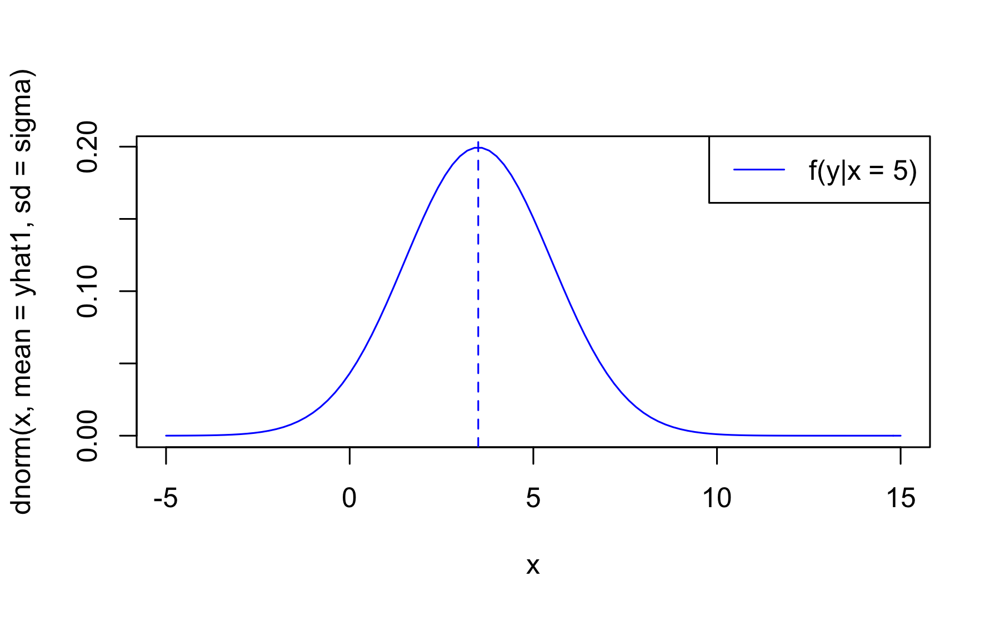
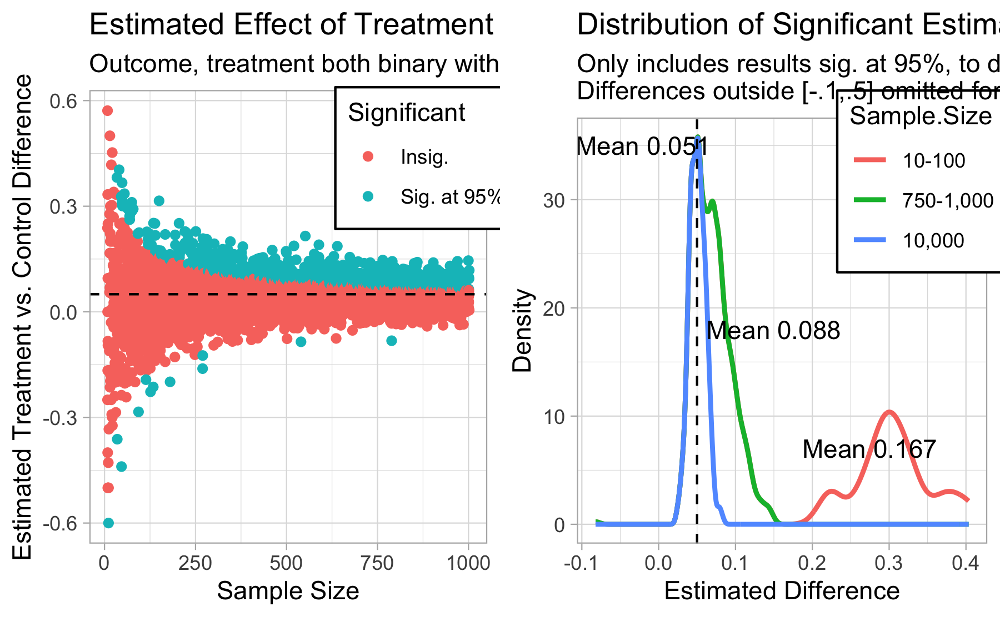
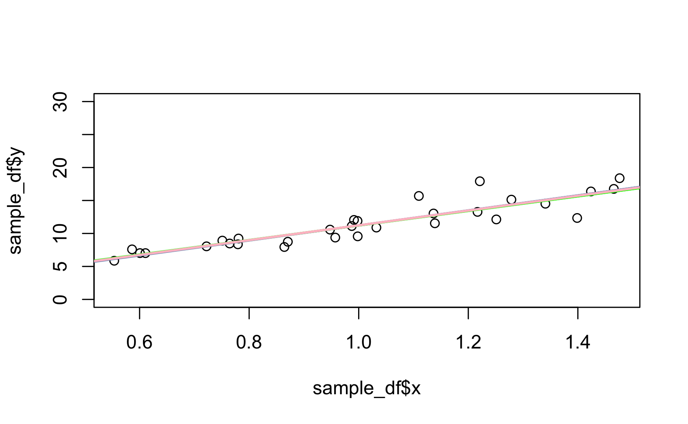
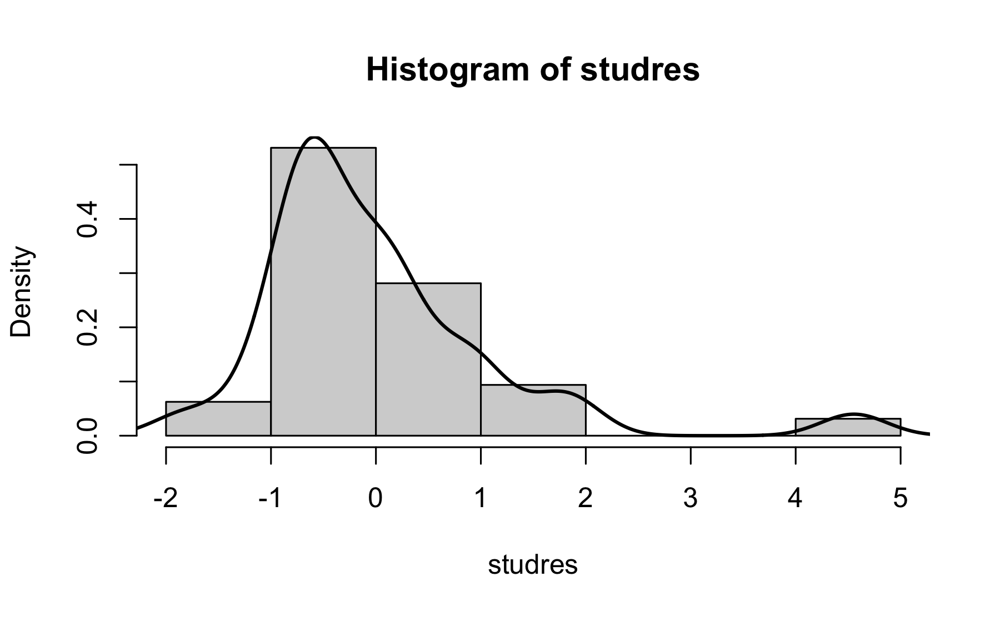
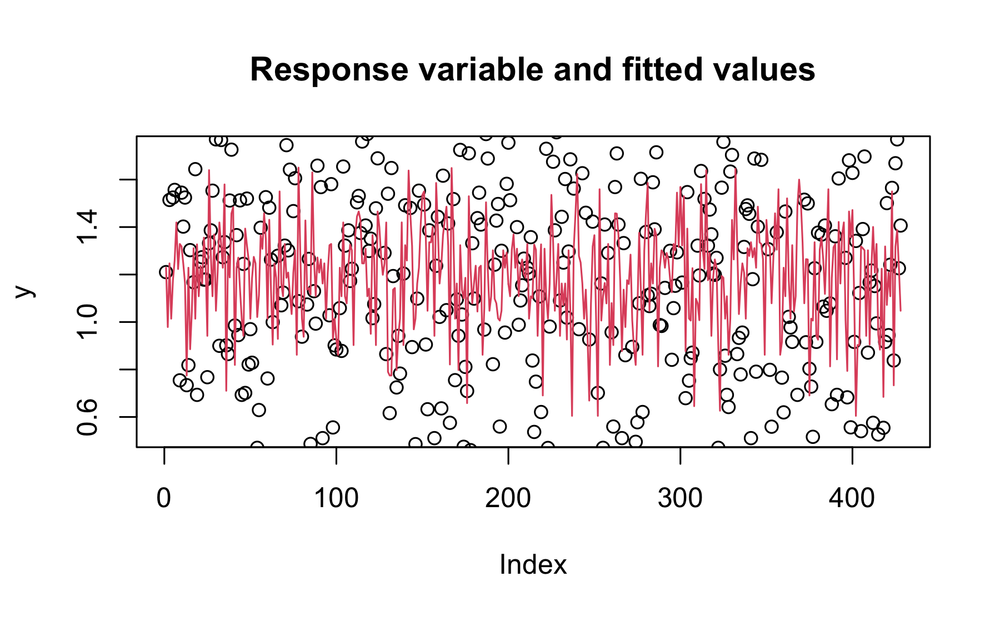

Introduction
(#fig:unnamed-chunk-3)Normal and simulated Gaussian densities on a regression line
This handout is designed for the use with MEM5220 - Applied Econometrics at Tallinn University of Technology, Department of Economics and Finance.
Prerequisites
A basic knowledge of the R (Team 2013) programming language is required.
In order to reproduce the examples in this script you need the statistical software package R. Additionally I recommend using the RStudio integrated developer environment (IDE) which will improve your R working experience.
Installation of R and RStudio
Go to the following webpages and download the software adequate for Your operating system:
Install R first and then proceed with RStudio. Afterwards start RStudio. For accessing packages and datasets from github we need to install the devtools package. On Windows, download and install Rtools, and devtools takes care of the rest. On Mac, install the Xcode command line tools. On Linux, install the R development package, usually called r-devel or r-base-dev.
Resources
Our primary resource is Heiss (2016).1 The book is available as free online version. For theoretical concepts I refer to Wooldridge (2015)2. For the timeseries part of the course a good reference material is Introductory Econometircs for Finance.
Attribution
This lecture material would not possible without many other open-source econometrics teaching materials and of course the R package developers. In addition to the main resources, examples and code of this workbook have been drawn from a number of free econometrics eBooks, blogs, R-vignette help pages and other researchers teaching materials.
Chapter 1.1.2 Simulating SLR is based on Heiss (2016) but adds parts of Dalpiaz (2016) and Colonescu (2018) teaching materials. Chapter 1.2.2 includes additional material from Hanck et al. (2018). Chapter 1.4 Heteroskedasticity has been amended with material from Rodrigues (2018) blog. The time series part is closely related to the teaching material of Andres Vörk. The finite distributed lags model is adapted from Constantin Colonescu.
Updates
For a brief rundown of the version history, we have:
Version 3.1.0.
I released the 3.1.0 version of this teaching material in March 15, 2021.
- Cleanup of certain outdated functions (dplyr::arrange)
- Remove
renv - Add quantile regression subsection to LM.Rmd
- Add heteroskedasdicity simulations
Known bugs:
- Line 2267 in LM.Rmd:
waldtestfails to compile in the bookdown version but works in the script version
Software information and conventions
The R session information when compiling this book is shown below:
I do not add prompts (> and +) to R source code in this book, and I comment out the text output with two hashes ## by default, as you can see from the R session information above. This is for your convenience when you want to copy and run the code (the text output will be ignored since it is commented out).
- R code blocks and their output appear in a gray background. E.g.,
2 + 2 == 5
[1] FALSEFunctions and inline code are in a typewriter font and followed by parentheses, all atop a gray background (e.g.,
brm()).When I want to make explicit the package a given function comes from, I insert the double-colon operator
::between the package name and the function (e.g.,tidybayes::mode_hdi()).
Package names are in bold text (e.g., rmarkdown). Content with Note, Your turn and Overthinking is surrounded by two horizontal lines. Overthinking sections serve as additional information for the interested reader but will not be covered in detail in class.
Contribute
You can contribute to this teaching material. Please fill an issue, improve the material or checkout alternative versions of this project.
The source code of the project is available on GitHub at https://github.com/nreigl/MEM5220.
And if you’re unacquainted with GitHub, check out my short Git for Economists presentation or take a look at (bryanHappyGitGitHub2020?) Happy Git and GitHub for the useR.
Acknowledgements
I thank Kadri Männasoo and Juan Carlos Cuestas for their useful comments.
1 Linear Regression
To load the dataset and necessary functions:
# This function 1. checks if the packages are installed. 2. It installs the packages if they were not in the list of installed packages. 3. It loads the packages into the workspace
if (!requireNamespace("devtools", quietly = TRUE))
install.packages("devtools")
PACKAGES<-c("pacman",
"wooldridge", # Wooldrige Datasets
"tidyverse", # for data manipulation and ggplots
"tibble",
"MCMCpack", # Markov Chain Monte Carlo Methods
"bindrcpp", # faster rbinds
"kableExtra", # Construct complex tables
"broom", # Tidy regression output
"ggpubr", # Multiple ggplots on a page. Note that, the installation of ggpubr will automatically install the gridExtra and the cowplot package; so you don’t need to re-install them.
"ggfortify", # Simple ggplot recipe for lm objects)
"plot3D", # 3D graphs
"car", # Companion to applied regression
"knitr", # knit functions
# "kableExtra", # extended knit functions for objects exported from other packages
"huxtable", # Regression tables, broom compatible
"modelsummary", # Regression tables, broom compatible, work also very well with panel data
"texreg", # One of the few regression table packages that plays nice with quantreg
"skimr", # nice summary tables
"mice", # multiple imputation
"VIM", # visualizing missing data
"stargazer", # Regression tables
"AER", # Functions, data sets, examples, demos, and vignettes for the book Christian Kleiber and Achim Zeileis (2008)
"MASS", # Functions and datasets to support Venables and Ripley, "Modern Applied Statistics with S"
"mvtnorm", # Multivariate Normal and t Distributions
"summarytools", # Report regression summary tables
"scales", # scale helper functions such as percent
"OutliersO3", # Outlier comparison method
"robustbase", # Basic robust statistics
"quantreg", # Quantile regression
"estimatr", # Fast Estimators for Design-Based Inference
"modelr", # model simulation/ boostraping the modern way
"magrittr") # pipes
inst<-match(PACKAGES, .packages(all=TRUE))
need<-which(is.na(inst))
if (length(need)>0) install.packages(PACKAGES[need], repos = c(CRAN="https://cran.rstudio.com"))
lapply(PACKAGES, require, character.only=T)1.1 Simple Linear Regression
We start off with a simple OLS Regression. We will work with multiple data sources:
- Data from Wooldridge (2015) : Introductory Econometrics: A Modern Approach.
- R data sets for “Principles of Econometrics” by Hill et al. (2008)
- Build in examples such as the
airqualitydataset
Classic examples of quantities modelled with simple linear regression:
- College GPA \(\sim\) SAT scores \(\beta > 0\)
- Change in GDP \(\sim\) change in unemployment \(\beta < 0\)
- House price \(\sim\) number of bedrooms \(\beta > 0\)
- Species heart weight \(\sim\) species body weight \(\beta > 0\)
- Fatalities per year \(\sim\) speed limit \(\beta < 0\)
Notice that these simple linear regressions are simplifications of more complex relationships between the variables in question.
In this exercise we use the dataset ceosal1. Let us analyse the dataset first
data("ceosal1")
help("ceosal1")
?ceosal1As we see from the R documentation the ceosal1 dataset contain of a random sample of data reported in the May 6, 1991 issue of Businessweek.
To get a first look at the data you can use the View() function inside
R Studio.
View(ceosal1) # For the compilation we omit the full View()| salary | pcsalary | sales | roe | pcroe | ros | indus | finance |
|---|---|---|---|---|---|---|---|
| 1095 | 20 | 27595.0 | 14.1 | 106.4 | 191 | 1 | 0 |
| 1001 | 32 | 9958.0 | 10.9 | -30.6 | 13 | 1 | 0 |
| 1122 | 9 | 6125.9 | 23.5 | -16.3 | 14 | 1 | 0 |
| 578 | -9 | 16246.0 | 5.9 | -25.7 | -21 | 1 | 0 |
| 1368 | 7 | 21783.2 | 13.8 | -3.0 | 56 | 1 | 0 |
| 1145 | 5 | 6021.4 | 20.0 | 1.0 | 55 | 1 | 0 |
| 1078 | 10 | 2266.7 | 16.4 | -5.9 | 62 | 1 | 0 |
| 1094 | 7 | 2966.8 | 16.3 | -1.6 | 44 | 1 | 0 |
| 1237 | 16 | 4570.2 | 10.5 | -70.2 | 37 | 1 | 0 |
| 833 | 5 | 2830.0 | 26.3 | -23.9 | 37 | 1 | 0 |
We could also take a look at the variable names, the dimension of the
data frame, and some sample observations with str().
str(ceosal1)
'data.frame': 209 obs. of 12 variables:
$ salary : int 1095 1001 1122 578 1368 1145 1078 1094 1237 833 ...
$ pcsalary: int 20 32 9 -9 7 5 10 7 16 5 ...
$ sales : num 27595 9958 6126 16246 21783 ...
$ roe : num 14.1 10.9 23.5 5.9 13.8 ...
$ pcroe : num 106.4 -30.6 -16.3 -25.7 -3 ...
$ ros : int 191 13 14 -21 56 55 62 44 37 37 ...
$ indus : int 1 1 1 1 1 1 1 1 1 1 ...
$ finance : int 0 0 0 0 0 0 0 0 0 0 ...
$ consprod: int 0 0 0 0 0 0 0 0 0 0 ...
$ utility : int 0 0 0 0 0 0 0 0 0 0 ...
$ lsalary : num 7 6.91 7.02 6.36 7.22 ...
$ lsales : num 10.23 9.21 8.72 9.7 9.99 ...
- attr(*, "time.stamp")= chr "25 Jun 2011 23:03"As we have seen before in the general R tutorial, there are a number of additional functions to access some of this information directly.
dim(ceosal1)
[1] 209 12nrow(ceosal1)
[1] 209ncol(ceosal1)
[1] 12summary(ceosal1)
salary pcsalary sales roe
Min. : 223 Min. :-61.00 Min. : 175.2 Min. : 0.50
1st Qu.: 736 1st Qu.: -1.00 1st Qu.: 2210.3 1st Qu.:12.40
Median : 1039 Median : 9.00 Median : 3705.2 Median :15.50
Mean : 1281 Mean : 13.28 Mean : 6923.8 Mean :17.18
3rd Qu.: 1407 3rd Qu.: 20.00 3rd Qu.: 7177.0 3rd Qu.:20.00
Max. :14822 Max. :212.00 Max. :97649.9 Max. :56.30
pcroe ros indus finance
Min. :-98.9 Min. :-58.0 Min. :0.0000 Min. :0.0000
1st Qu.:-21.2 1st Qu.: 21.0 1st Qu.:0.0000 1st Qu.:0.0000
Median : -3.0 Median : 52.0 Median :0.0000 Median :0.0000
Mean : 10.8 Mean : 61.8 Mean :0.3206 Mean :0.2201
3rd Qu.: 19.5 3rd Qu.: 81.0 3rd Qu.:1.0000 3rd Qu.:0.0000
Max. :977.0 Max. :418.0 Max. :1.0000 Max. :1.0000
consprod utility lsalary lsales
Min. :0.0000 Min. :0.0000 Min. :5.407 Min. : 5.166
1st Qu.:0.0000 1st Qu.:0.0000 1st Qu.:6.601 1st Qu.: 7.701
Median :0.0000 Median :0.0000 Median :6.946 Median : 8.217
Mean :0.2871 Mean :0.1722 Mean :6.950 Mean : 8.292
3rd Qu.:1.0000 3rd Qu.:0.0000 3rd Qu.:7.249 3rd Qu.: 8.879
Max. :1.0000 Max. :1.0000 Max. :9.604 Max. :11.489 # kable(skim(ceosal1)) # for bookdownThe interesting task here is to determine how far a high the CEO salary is, for a given return on equity.
Your turn
What sign would be expect of \(\beta\) (the slope)?
A: Without seeing the data my prior is that \(\beta > 0\).
Note
A simple linear model as assumes that the mean of each \(y_{i}\) conditioned on \(x_{i}\) is a linear function of \(x_{i}\). But notice that simple linear regressions are simplifications of more complex relationships between the variables in question Dalpiaz (2016).
# Use ggplot style
ggplot(ceosal1, aes(x = roe, y = salary)) +
geom_point()(#fig:ceosal1)Relationship between ROE and Salary
Consider a simple regression model
\(salary = \beta_0 + \beta_1roe + u\)
In the general form the linear regression model can be written as:
\[\begin{equation} y = \beta_{0} + \beta_{1}x + u (\#eq:simplelinearregressionmodel) \end{equation}\]We are concerned with the population parameter \(\beta_{0}\) and \(\beta_{1}\). The ordinary least squares (OLS) estimators are:
\[\begin{equation} \hat{\beta}_{0} = \bar{y} - \hat{\beta}_{1}\bar{x} (\#eq:populationparameterBeta0) \end{equation}\]The ordinary least squares (OLS) estimators are
\[\begin{equation} \hat{\beta}_{1} = \frac{Cov(x,y)}{Var(x)} (\#eq:populationparameterBeta1) \end{equation}\]Ingredients for the OLS formulas
attach(ceosal1)
cov(roe, salary)
[1] 1342.538var(roe)
[1] 72.56499mean(salary)
[1] 1281.12Manual calculation of the OLS coefficients
b1hat <- cov(roe,salary)/var(roe)b0hat <- mean(salary) - b1hat * mean(roe)Or use the lm() function
lm(salary ~ roe, data=ceosal1)
Call:
lm(formula = salary ~ roe, data = ceosal1)
Coefficients:
(Intercept) roe
963.2 18.5
lm1_ceosal1 <- lm(salary ~ roe, data=ceosal1)
summary(lm1_ceosal1)
Call:
lm(formula = salary ~ roe, data = ceosal1)
Residuals:
Min 1Q Median 3Q Max
-1160.2 -526.0 -254.0 138.8 13499.9
Coefficients:
Estimate Std. Error t value Pr(>|t|)
(Intercept) 963.19 213.24 4.517 1.05e-05 ***
roe 18.50 11.12 1.663 0.0978 .
---
Signif. codes: 0 '***' 0.001 '**' 0.01 '*' 0.05 '.' 0.1 ' ' 1
Residual standard error: 1367 on 207 degrees of freedom
Multiple R-squared: 0.01319, Adjusted R-squared: 0.008421
F-statistic: 2.767 on 1 and 207 DF, p-value: 0.09777Plot the linear regression fit the base r way.
plot(salary~ roe, data = ceosal1,
xlab = "Return on equity",
ylab = "Salary",
main = "Salary vs return on equity",
pch = 20,
cex = 2,
col = "grey")
abline(lm1_ceosal1, lwd = 3, col = "darkorange")(#fig:fig1)OLS regression base Rstyle
Or use ggplot
ggplot(ceosal1, aes(x = roe, y = salary)) +
geom_point() +
stat_smooth(method = "lm", col = "red")(#fig:fig2)OLS regression ggplot2 style
Determine the names of the elements of the list using the names()
command.
names(lm1_ceosal1)
[1] "coefficients" "residuals" "effects" "rank"
[5] "fitted.values" "assign" "qr" "df.residual"
[9] "xlevels" "call" "terms" "model" Extract one element, for example the residuals from the list object
head(lm1_ceosal1$residuals) # head() just prints out the first 6 residual values
1 2 3 4 5 6
-129.0581 -163.8543 -275.9692 -494.3483 149.4923 -188.2151 Another way to access stored information in lm1_ceosal1 are the
coef(), resid(), and fitted() functions. These return the
coefficients, residuals, and fitted values, respectively.
coef(lm1_ceosal1)
(Intercept) roe
963.19134 18.50119 The function summary() is useful in many situations. We see that when
it is called on our model, it returns a good deal of information.
summary(lm1_ceosal1)
Call:
lm(formula = salary ~ roe, data = ceosal1)
Residuals:
Min 1Q Median 3Q Max
-1160.2 -526.0 -254.0 138.8 13499.9
Coefficients:
Estimate Std. Error t value Pr(>|t|)
(Intercept) 963.19 213.24 4.517 1.05e-05 ***
roe 18.50 11.12 1.663 0.0978 .
---
Signif. codes: 0 '***' 0.001 '**' 0.01 '*' 0.05 '.' 0.1 ' ' 1
Residual standard error: 1367 on 207 degrees of freedom
Multiple R-squared: 0.01319, Adjusted R-squared: 0.008421
F-statistic: 2.767 on 1 and 207 DF, p-value: 0.09777The summary() command also returns a list, and we can again use
names() to learn what about the elements of this list.
names(summary(lm1_ceosal1))
[1] "call" "terms" "residuals" "coefficients"
[5] "aliased" "sigma" "df" "r.squared"
[9] "adj.r.squared" "fstatistic" "cov.unscaled" So, for example, if we wanted to directly access the value of \(R^2\),
instead of copy and pasting it out of the printed statement from
summary(), we could do so.
summary(lm1_ceosal1)$r.squared
[1] 0.01318862Your turn
Recall that the explained sum of squares (SSE) is
\[\begin{equation} SSE = \sum_{i=1}^{n}(\hat{y}_{i} - \bar{y})^2 = (n-1) \times Var(\hat{y}) (\#eq:SSE) \end{equation}\]and the residual sum of squares (SSR) is
\[\begin{equation} R^2 = \frac{Var(\hat{y})}{Var(y)} = 1 - \frac{Var(\hat{u})}{Var(y)} (\#eq:SSR) \end{equation}\]One can see that the correlation between observed and fitted values is a square root of \(R^2\).
Calculate \(R^2\) manually:
var(fitted(lm1_ceosal1))/var(ceosal1$salary)
[1] 0.013188621 - var(residuals(lm1_ceosal1))/var(ceosal1$salary)
[1] 0.01318862Another useful function is the predict() function.
set.seed(123)
# unique(ceosal1$roe)
roe_sample <-sample(ceosal1$roe, 1)
roe_sample
[1] 19.6Let’s make a prediction for salary when the return on equity is 19.6000004.
b0hat_sample <- mean(salary) - b1hat * roe_sampleWe are not restricted to observed values of the explanatory variable. Instead we can supply also our own predictor values
predict(lm1_ceosal1, newdata = data.frame(roe = 30))
1
1518.227 The above code reads “predict the salary when the return on equity is 30 using the lm1_ceosal1 model.”
Overthinking
1.1.1 Regression through the Origin and Regression on a Constant
Regression without intercept (through origin)
lm2 <- lm(salary ~ 0 + roe, data = ceosal1)Regression without slope
lm3 <- lm(salary ~ 1, data = ceosal1)plot(salary~ roe, data = ceosal1,
xlab = "Return on equity",
ylab = "Salary",
main = "Salary vs return on equity",
pch = 20,
cex = 2,
col = "grey")
abline(lm1_ceosal1, lwd = 3, lty = 1, col = "darkorange")
abline(lm2,lwd = 3, lty = 2, col = "darkblue")
abline(lm3, lwd = 3, lty = 3, col = "black")
legend("topleft",
c("full",
"through origin",
"constant only"),
lwd =2,
lty = 1:3)(#fig:fig3)Regression through the Origin and on a Constant
In models without the intercept the \(R^2\) loses its interpretatation. The reason is that the \(R^2\) is the ratio of explained variance to total variance only if the intercept is included.
Overthinking
1.1.2 Simulating SLR
1.1.2.0.1 Expected Values, Variance, and Standard Errors
The Gauss–Markov theorem tells us that when estimating the parameters of the simple linear regression model \(\beta_{0}\) and \(\beta_{1}\), the \(\hat{\beta}_{0}\) and \(\hat{\beta}_{1}\) which we derived are the best linear unbiased estimates, or BLUE for short. (The actual conditions for the Gauss–Markov theorem are more relaxed than the SLR model.)
In short those assumptions are:
- SLR.1 Linear population regression function \(y = \beta_0 + \beta_{1} \times x + u\)
- SLR.2 Random sampling of x and y from the population
- SLR.3 Variation in the sample values: \(x_{1}, \dots , x_{n}\)
- SLR.4 Zero conditional mean: \(\mathbf{E}(u|x) = 0\)
- SLR.5 Homeskedasticity: \(Var(u|x) = \sigma^2\)
Recall that under SLR.1 - SLR.4 the OLS parameter estimators are unbiased. Under SLR.1 - SLR.4 the OLS parameter estimators have a specific sampling variance.
Simulating a model is an important concept. In practice you will almost never have a true model, and you will use data to attempt to recover information about the unknown true model. With simulation, we decide the true model and simulate data from it. Then, we apply a method to the data, in this case least squares. Now, since we know the true model, we can assess how well it did.
Simulation also helps to grasp the concepts of estimators, estimates, unbiasedness, the sampling variance of the estimators, and the consequences of violated assumptions.
Sample size
n <- 200True parameters
b0<- 1
b1 <- 0.5
sigma <- 2 # standard deviation of the error term u
x1 <- 5Determine the distribution of the independent variable
yhat1 <- b0 + b1 * x1 # Note that we do not include the error termPlot a Gaussian distribution of the dependent variable based on the parameters
curve(dnorm(x, mean = yhat1, sd = sigma), -5, 15, col = "blue")
abline(v = yhat1, col = "blue", lty = 2)
legend("topright", legend = c("f(y|x = 5)"), lty = 1, col = c("blue"))
This represent the theoretical (true) probability distribution of \(y\), given \(x\)
We can calculate the variance of \(b_{1}\) and plot the corresponding density function.
\[\begin{equation} var(b_2) = \frac{\sigma^2}{\sum{}{}(x_1 - \bar{x})^2} (\#eq:variancebeta) \end{equation}\]Assume that \(x_{2}\) represents a second possible predictor of \(y\)
x2 <- 18
x <- c(rep(x1, n/2), rep(x2, n/2))
xbar <- mean(x)
sumxbar <- sum((x-xbar)^2)
varb <- (sigma^2)/sumxbar
sdb <-sqrt(varb)
leftlim <- b1-3*sdb
rightlim <- b1+3*sdbcurve(dnorm(x, mean = b1, sd = sdb), leftlim, rightlim)
abline(v = b1, col = "blue", lty = 2)(#fig:fig4)The theoretical (true) probability density function of b1
Draw sample of size \(n\)
x <- rnorm(n, 4, sigma)
# Another way is to assume that the values for x are fixed and know
# x= seq(from = 0, to = 10, length.out = n)u <- rnorm(n, 0, sigma)y <- b0 + b1 * x + uEstimate parameter by OLS
olsreg <- lm(y ~x )simulation.df <- data.frame(x,y)
population.df <- data.frame(b0, b1)plot(simulation.df,
xlab = "x",
ylab = "y",
# main = "Simulate least squares regression",
pch = 20,
cex = 2,
col = "grey")
abline(olsreg, lwd = 3, lty = 1, col = "darkorange")
abline(b0, b1, lwd = 3, lty = 2, col = "darkblue")
legend("topleft",
c("OLS regression function",
"Population regression function"),
lwd =2,
lty = 1:2)(#fig:fig5)Simulated Sample and OLS Regression Line
lable1 <- "OLS regression function"
ggplot(simulation.df, aes(x = x, y = y)) +
geom_point() +
geom_abline(aes(intercept=b0,slope=b1,colour="Population regression function"), linetype ="dashed", show.legend = TRUE)+
stat_smooth(aes(colour ="OLS regression function"), method = "lm",se=FALSE, show.legend =TRUE)+
labs(colour = "Regression functions"
# , title = "Simulate least squares regression"
)(#fig:fig6)Simulated Sample and OLS Regression Line (gpplot Style)
Since the expected values and variances of our estimators are defined over separate random samples from the same population, it makes sense to repeat our simulation exercise over many simulated samples.
# Set the random seed
set.seed(1234567)
# set sample size and number of simulations
n<-1000; r<-10000
# set true parameters: betas and sd of u
b0<-1.0; b1<-0.5; sigma<-2
# initialize b0hat and b1hat to store results later:
b0hat <- numeric(r)
b1hat <- numeric(r)
# Draw a sample of x, fixed over replications:
x <- rnorm(n,4,1)
# repeat r times:
for(j in 1:r) {
# Draw a sample of y:
u <- rnorm(n,0,sigma)
y <- b0 + b1*x + u
# estimate parameters by OLS and store them in the vectors
bhat <- coefficients( lm(y~x) )
b0hat[j] <- bhat["(Intercept)"]
b1hat[j] <- bhat["x"]
}# MC estimate of the expected values:
mean(b0hat)
[1] 0.9985388
mean(b1hat)
[1] 0.5000466
# MC estimate of the variances:
var(b0hat)
[1] 0.0690833
var(b1hat)
[1] 0.004069063# Initialize empty plot
plot( NULL, xlim=c(0,8), ylim=c(0,6), xlab="x", ylab="y")
# add OLS regression lines
for (j in 1:10) abline(b0hat[j],b1hat[j],col="gray")
# add population regression line
abline(b0,b1,lwd=2)
# add legend
legend("topleft",c("Population","OLS regressions"),
lwd=c(2,1),col=c("black","gray"))(#fig:fig7)Population and Simulated OLS Regression Lines
Even though the loop solution is transparent, let us take a look at a different, more modern approach.
# define a function the returns the alpha -- its point estimate, standard error, etc. -- from the OLS
x <- rnorm(n,4,1) # NOTE 1: Although a normal distribution is usually defined by its mean and variance, 'rnorm()' requires the standard deviation as input for the second moment.
# NOTE 2: We use the same values for x in all samples since we draw them outside of the loop.
iteration <- function() {
u <- rnorm(n,0,sigma)
y <- b0 + b1*x + u
lm(y~x) %>%
broom::tidy() # %>%
# dplyr::filter(term == 'x') # One could only extract the slope
}
# 1000 iterations of the above simulation
MC_coef<- map_df(1:1000, ~iteration())
str(MC_coef)
tibble [2,000 × 5] (S3: tbl_df/tbl/data.frame)
$ term : chr [1:2000] "(Intercept)" "x" "(Intercept)" "x" ...
$ estimate : num [1:2000] 1.577 0.372 1.44 0.387 1.355 ...
$ std.error: num [1:2000] 0.2672 0.0639 0.2623 0.0628 0.2626 ...
$ statistic: num [1:2000] 5.9 5.82 5.49 6.17 5.16 ...
$ p.value : num [1:2000] 4.94e-09 7.91e-09 5.13e-08 9.92e-10 2.99e-07 ...Instead of plotting simulated and true parameter regression lines we can take a look at the kernel density of the simulated parameter estimates
Figure @ref(fig:fig8) shows the simulated distribution of \(\beta_{0}\) and \(\beta_{1}\) the theoretical one.
# plot the results
str(MC_coef)
tibble [2,000 × 5] (S3: tbl_df/tbl/data.frame)
$ term : chr [1:2000] "(Intercept)" "x" "(Intercept)" "x" ...
$ estimate : num [1:2000] 1.577 0.372 1.44 0.387 1.355 ...
$ std.error: num [1:2000] 0.2672 0.0639 0.2623 0.0628 0.2626 ...
$ statistic: num [1:2000] 5.9 5.82 5.49 6.17 5.16 ...
$ p.value : num [1:2000] 4.94e-09 7.91e-09 5.13e-08 9.92e-10 2.99e-07 ...
MC_coef<- MC_coef %>%
mutate(OLScoeff = ifelse(term == "x", "b1hat", "b0hat")) %>% # rename the x to b1hat and (Intercept) to b0hat and create a new column
mutate(Simulated = ifelse(term == "x", "b1", "b0")) # %>%ggplot(data= MC_coef, aes(estimate)) +
geom_histogram() +
geom_vline(data = dplyr::filter(MC_coef, OLScoeff == "b0hat"), aes(xintercept=b0), colour="pink") +
geom_vline(data = dplyr::filter(MC_coef, OLScoeff == "b1hat"), aes(xintercept=b1), colour="darkgreen") +
geom_text(data=MC_coef[3,], mapping=aes(x=estimate, y=8, label=paste("True parameter: ", MC_coef[3,7])), colour = "pink") +
geom_text(data=MC_coef[4,], mapping=aes(x=estimate, y=8, label=paste("True parameter: ", MC_coef[4,7])), colour = "darkgreen") +
facet_wrap( ~ OLScoeff, scales = "free") +
labs(
title = "Histogram Monte Carlo Simulations and True population parameters") +
theme_bw()
(#fig:fig8)Histogram b0 and b1 and true parameter
b1_sim <- MC_coef %>%
dplyr::filter(Simulated == "b1")
mean(b1_sim$estimate)
[1] 0.5011414
var(b1_sim$estimate) == (sd(b1_sim$estimate))^2
[1] FALSE
all.equal(var(b1_sim$estimate) , (sd(b1_sim$estimate))^2) # Floating point arithmetic!
[1] TRUEggplot(data= b1_sim, aes(estimate)) +
geom_density(aes(fill = Simulated), alpha = 0.2) + # computes and draws the kernel density, which is the smoothed version of the histogram
# stat_function(fun = dnorm, args = list(mean = mean(b1_sim$estimate), sd = sd(b1_sim$estimate)), aes(colour = "true")) +
stat_function(fun = dnorm, args = list(mean = 0.5, sd = sd(b1_sim$estimate)), aes(colour = "Population")) +
# labs(
# title = "Kernel Density Monte Carlo Simulations vs. True population parameters"
# ) +
scale_color_discrete(name="")(#fig:fig9)Kernel Density Monte Carlo Simulations vs. True population parameters of b1
1.1.2.0.2 Violation of SLR.4
To implement a violation of SLR.4 (zero conditional mean) consider a case where in the population \(u\) is not mean independent of \(x\), for example
\[ \mathbf{E}(u|x) = \frac{x-4}{5} \]
# Set the random seed
set.seed(1234567)
# set sample size and number of simulations
n<-1000; r<-10000
# set true parameters: betas and sd of u
b0<-1; b1<-0.5; su<-2
# initialize b0hat and b1hat to store results later:
b0hat <- numeric(r)
b1hat <- numeric(r)
# Draw a sample of x, fixed over replications:
x <- rnorm(n,4,1)
# repeat r times:
for(j in 1:r) {
# Draw a sample of y:
u <- rnorm(n, (x-4)/5, su) # this is where manipulate the assumption of zero conditional mean
y <- b0 + b1*x + u
# estimate parameters by OLS and store them in the vectors
bhat <- coefficients( lm(y~x) )
b0hat[j] <- bhat["(Intercept)"]
b1hat[j] <- bhat["x"]
}OLS coefficients
# MC estimate of the expected values:
mean(b0hat)
[1] 0.1985388
mean(b1hat)
[1] 0.7000466
# MC estimate of the variances:
var(b0hat)
[1] 0.0690833
var(b1hat)
[1] 0.004069063The average estimates are far from the population parameters \(\beta_0=1\) and \(\beta_1 = 0.5\)!
1.1.2.0.3 Violation of SLR.5
Homoskedasticity is not required for unbiasedness but for it is a requirement for the theorem of sampling variance. Consider the following heteroskedastic behavior of \(u\) given \(x\).
# Set the random seed
set.seed(1234567)
# set sample size and number of simulations
n<-1000; r<-10000
# set true parameters: betas and sd of u
b0<-1; b1<-0.5; su<-2
# initialize b0hat and b1hat to store results later:
b0hat <- numeric(r)
b1hat <- numeric(r)
# Draw a sample of x, fixed over replications:
x <- rnorm(n,4,1)
# repeat r times:
for(j in 1:r) {
# Draw a sample of y:
varu <- 4/exp(4.5) * exp(x)
u <- rnorm(n, 0, sqrt(varu) )
y <- b0 + b1*x + u
# estimate parameters by OLS and store them in the vectors
lm_heterosced <- lm(y~x)
bhat <- coefficients( lm(y~x) )
b0hat[j] <- bhat["(Intercept)"]
b1hat[j] <- bhat["x"]
}summary(lm_heterosced) # just the last sample of the MC-simulation
Call:
lm(formula = y ~ x)
Residuals:
Min 1Q Median 3Q Max
-23.6742 -0.9033 0.0052 1.0012 9.3411
Coefficients:
Estimate Std. Error t value Pr(>|t|)
(Intercept) 1.24088 0.27158 4.569 5.51e-06 ***
x 0.44561 0.06593 6.759 2.37e-11 ***
---
Signif. codes: 0 '***' 0.001 '**' 0.01 '*' 0.05 '.' 0.1 ' ' 1
Residual standard error: 2.075 on 998 degrees of freedom
Multiple R-squared: 0.04377, Adjusted R-squared: 0.04281
F-statistic: 45.68 on 1 and 998 DF, p-value: 2.367e-11Plot the residual against the regressor suspected of creating heteroskedasticity, or more generally, the fitted values of the regression.
res <- residuals(lm_heterosced)
yhat <- fitted(lm_heterosced)par(mfrow = c(1,2))
plot(x, res, ylab = "residuals")
plot(yhat, res, xlab = "fitted values", ylab = "residuals")(#fig:fig10)Heteroskedasticity in the simulated data
# MC estimate of the expected values:
mean(b0hat)
[1] 1.0019
mean(b1hat)
[1] 0.4992376
# MC estimate of the variances:
var(b0hat)
[1] 0.08967037
var(b1hat)
[1] 0.007264373Unbiasedness is provided but sampling variance is incorrect (compared to the results provided above).
1.1.3 Polynomials and Logarithms
Sometimes the scatter plot diagram or some theoretical considerations suggest a non-linear relationship. The most popular non-linear transformation involve logarithms of the dependent or independent variables and polynomial functions.
We will use a new dataset, wage1, for this section. A detailed exploratory analysis of the dataset is left to the reader.
data("wage1")1.1.3.1 Predictor variable transformation
A common variance stabilizing transformation (VST) is necessary when we see increasing variance in a fitted versus residuals plot.
To use the log of an independent variable is to make its distribution closer to the normal distribution.
# wage1$logwage <- log(wage1$wage) # one could also create a new variable
p1_wagehisto <- ggplot(wage1) +
geom_histogram(aes(x = wage), fill = "red", alpha = 0.6)
p2_wagehisto <- ggplot(wage1) +
geom_histogram(aes(x = wage), fill = "blue", alpha = 0.6) +
scale_x_continuous(trans='log2', "Log Wage") # instead of creating a new variable with simply define that the x-scale undergoes a logarithmic transformationggarrange(p1_wagehisto, p2_wagehisto,
labels = c("A", "B"),
ncol = 2, nrow = 1)(#fig:fig11)Histogram of wage and log(wage)
A model with a log transformed response:
\[\begin{equation} log(Y_{i}) = \beta_{0} + \beta_{1} \times x_{i} + \epsilon_{i} \end{equation}\]lm_wage <- lm(wage ~ educ, data = wage1)
lm_wage1 <- lm(log(wage) ~ educ, data = wage1)
summary(lm_wage)
Call:
lm(formula = wage ~ educ, data = wage1)
Residuals:
Min 1Q Median 3Q Max
-5.3396 -2.1501 -0.9674 1.1921 16.6085
Coefficients:
Estimate Std. Error t value Pr(>|t|)
(Intercept) -0.90485 0.68497 -1.321 0.187
educ 0.54136 0.05325 10.167 <2e-16 ***
---
Signif. codes: 0 '***' 0.001 '**' 0.01 '*' 0.05 '.' 0.1 ' ' 1
Residual standard error: 3.378 on 524 degrees of freedom
Multiple R-squared: 0.1648, Adjusted R-squared: 0.1632
F-statistic: 103.4 on 1 and 524 DF, p-value: < 2.2e-16
summary(lm_wage1)
Call:
lm(formula = log(wage) ~ educ, data = wage1)
Residuals:
Min 1Q Median 3Q Max
-2.21158 -0.36393 -0.07263 0.29712 1.52339
Coefficients:
Estimate Std. Error t value Pr(>|t|)
(Intercept) 0.583773 0.097336 5.998 3.74e-09 ***
educ 0.082744 0.007567 10.935 < 2e-16 ***
---
Signif. codes: 0 '***' 0.001 '**' 0.01 '*' 0.05 '.' 0.1 ' ' 1
Residual standard error: 0.4801 on 524 degrees of freedom
Multiple R-squared: 0.1858, Adjusted R-squared: 0.1843
F-statistic: 119.6 on 1 and 524 DF, p-value: < 2.2e-16Plotting Diagnostics for Linear Models
plot(lm_wage)(#fig:fig12)Regression diagnostics plot base R - Linear Relationship
autoplot(lm_wage, which = 1:6, colour = 'dodgerblue3',
smooth.colour = 'red', smooth.linetype = 'dashed',
ad.colour = 'blue',
label = FALSE,
label.size = 3, label.n = 5, label.colour = 'blue',
ncol = 3) +
theme_bw()(#fig:fig13)Regression diagnostics autoplot(ggplot) - Linear Relationship
autoplot(lm_wage1, which = 1:6, colour = 'dodgerblue3',
smooth.colour = 'red', smooth.linetype = 'dashed',
ad.colour = 'blue',
label = FALSE,
label.size = 3, label.n = 5, label.colour = 'blue',
ncol = 3) +
theme_bw()(#fig:fig14)Regression diagnostics - Non-Linear Relationship
p1_nonlinearities <- ggplot(wage1, aes(x = educ, y = wage )) +
geom_point() +
scale_y_continuous(trans='log2', "Log Wage") +
stat_smooth(aes(fill="Linear Model"),size=1,method = "lm" ,span =0.3, se=F) +
guides(fill = guide_legend("Model Type")) +
theme_bw()
p1_nonlinearities
Note that if we re-scale the model from a log scale back to the original scale of the data, we now have
\[\begin{equation} Y_{i} = exp(\beta_{0} + \beta_{1} \times x_{i}) \times exp(\epsilon_{i}) \end{equation}\]which has errors entering in a multiplicative fashion.
log.model.df <- data.frame(x = wage1$educ,
y = exp(fitted(lm_wage1))) # This is essentially exp(b0_wage1 + b1_wage1 * wage1$educ)p2_nonlinearities <- ggplot(wage1, aes(x = educ, y = wage)) +
geom_point() +
geom_line(data = log.model.df, aes(x, y, color = "Log Model"), size = 1, linetype = 2) +
guides(color = guide_legend("Model Type")) +
theme_bw()ggarrange(p1_nonlinearities, p2_nonlinearities,
labels = c("A", "B"),
ncol = 2, nrow = 1)(#fig:fig15)Wages by Education - Different transformations
A: Plotting the data on the transformed log scale and adding the fitted line, the relationship again appears linear, and the variation about the fitted line looks more constant.
B: By plotting the data on the original scale, and adding the fitted regression, we see an exponential relationship. However, this is still a linear model, since the new transformed response, \(log(Y_{i}\), is still a linear combination of the predictors. In other words, only \(\beta\) needs to be linear, not the \(x\) values.
Quadratic Model
\[\begin{equation} Y_{i} = \beta_{0} + \beta_{1} \times x_{i} \beta_{2} \times x^2_{i} + \epsilon_{i} \end{equation}\]New dataset from Wooldrige: Collected from the real estate pages of the Boston Globe during 1990. These are homes that sold in the Boston, MA area.
data("hprice1", package = "wooldridge")In R, independent variables involving mathematical operators can be
included in regression equation with the function I()
We estimate the following regression:
\[\begin{equation} hprice ~ \beta_{0} + \beta_{1} sqrft + u \end{equation}\]lm_hprice <- lm(price ~ sqrft, data = hprice1)and a regression model that includes a squared term
\[\begin{equation} hprice ~ \beta_{0} + \beta_{1} sqrft + \beta_{2} sqrft^2 + u \end{equation}\]lm_hprice1 <- lm(price ~ sqrft + I(sqrft^2), data = hprice1)Alternatively use the poly() function. Be careful of the additional
argument raw3.
lm_hprice2 <- lm(price ~ poly(sqrft, degree = 2), data = hprice1)
lm_hprice3 <- lm(price ~ poly(sqrft, degree = 2, raw = TRUE), data = hprice1) # if true, use raw and not orthogonal polynomials.unname(coef(lm_hprice1))
[1] 1.849453e+02 -1.710855e-02 3.262809e-05
unname(coef(lm_hprice2))
[1] 293.5460 754.8517 135.6051
unname(coef(lm_hprice3))
[1] 1.849453e+02 -1.710855e-02 3.262809e-05
all.equal(unname(coef(lm_hprice1)), unname(coef(lm_hprice2)))
[1] "Mean relative difference: 5.401501"
all.equal(unname(coef(lm_hprice1)), unname(coef(lm_hprice3)))
[1] TRUE
all.equal(fitted(lm_hprice1), fitted(lm_hprice2))
[1] TRUE
all.equal(fitted(lm_hprice1), fitted(lm_hprice3))
[1] TRUEWith the function all.equal() we can test if all elements in two
vectors are the “nearly” the same. “Nearly” refers to the case when
tolerance values are exceeded.
Why are those values not the same depending on the poly() function
argument raw = True? In the case of raw = True R uses raw and not
orthogonal polynomials.
This can have importan implications in the case when multiple polynimoals are used in the regression. The linear regressar \(sqrft\) is uncorrelated linearly with the squared explanatory variable \(sqrft^2\). However, if we add a cubic term \(sqrft^3\), multicollinearty between \(sqrft^2\) and \(sqrft^3\) might become and issues of the polynomials are NOT orthogonalized.
We can also extract the standard error of our estimated coefficents manually.
Starting with the variance-covariance matrix of the regression model
vcov_lm_hprice2 <- vcov(lm_hprice2)Extracting only the diagonal element of the matrix and taking the square
root we obtain the standard errors as reported in summary() function
call.
sqrt(diag(vcov_lm_hprice2))
(Intercept) poly(sqrft, degree = 2)1 poly(sqrft, degree = 2)2
6.638736 62.276866 62.276866 summary(lm_hprice2)
Call:
lm(formula = price ~ poly(sqrft, degree = 2), data = hprice1)
Residuals:
Min 1Q Median 3Q Max
-158.261 -35.158 -7.924 24.262 223.516
Coefficients:
Estimate Std. Error t value Pr(>|t|)
(Intercept) 293.546 6.639 44.217 <2e-16 ***
poly(sqrft, degree = 2)1 754.852 62.277 12.121 <2e-16 ***
poly(sqrft, degree = 2)2 135.605 62.277 2.177 0.0322 *
---
Signif. codes: 0 '***' 0.001 '**' 0.01 '*' 0.05 '.' 0.1 ' ' 1
Residual standard error: 62.28 on 85 degrees of freedom
Multiple R-squared: 0.6408, Adjusted R-squared: 0.6324
F-statistic: 75.83 on 2 and 85 DF, p-value: < 2.2e-161.2 Multiple Linear Regression
Note
A (general) linear model is similar to the simple variant, but with a multivariate \(x \epsilon \!R^{\rho}\) and a mean given by a hyperplane in place of a single line.
- General principles are the same as the simple case
- Math is more difficult because we need to use matrices
- Interpretation is more difficult because the \(\beta_{j}\) are effects conditional on the other variables
Many would retain the same signs as the simple linear regression, but the magnitudes would be smaller. In some cases, it is possible for the relationship to flip directions when a second (highly correlated) variable is added Dalpiaz (2016).
\[\begin{equation} y = \beta_{0} + \beta_{1}x_{1} + \beta_{2}x_{2} + \dots + \beta_{k}x_{k} + u (\#eq:multipleregression) \end{equation}\]
The next example from Wooldrige relates the college GPA (“cloGPA”) to the high school GPA (“hsGPA”) and achievement test score (“ACT”) for a sample of 141 students.
data("gpa1", package = "wooldridge")
attach(gpa1)
?gpa1Obtain parameter estimates
GPAres <- lm(colGPA ~ hsGPA + ACT, data = gpa1)
summary(GPAres)
Call:
lm(formula = colGPA ~ hsGPA + ACT, data = gpa1)
Residuals:
Min 1Q Median 3Q Max
-0.85442 -0.24666 -0.02614 0.28127 0.85357
Coefficients:
Estimate Std. Error t value Pr(>|t|)
(Intercept) 1.286328 0.340822 3.774 0.000238 ***
hsGPA 0.453456 0.095813 4.733 5.42e-06 ***
ACT 0.009426 0.010777 0.875 0.383297
---
Signif. codes: 0 '***' 0.001 '**' 0.01 '*' 0.05 '.' 0.1 ' ' 1
Residual standard error: 0.3403 on 138 degrees of freedom
Multiple R-squared: 0.1764, Adjusted R-squared: 0.1645
F-statistic: 14.78 on 2 and 138 DF, p-value: 1.526e-06
coef(GPAres)[[1]]
[1] 1.286328In the multiple linear regression setting, some of the interpretations of the coefficients change slightly. Here, \(\hat\beta_{0} =\) 1.2863278 is our estimate for \(\beta_{0}\) when all of the predictors are 0. In this example this makes sense but think of the following example:
Your turn
Assume the following model:
mpg_model = lm(hp ~ wt + cyl, data = mtcars)
coef(mpg_model)
(Intercept) wt cyl
-51.805567 1.330463 31.387901 How do you interpret the intercept coefficient estimate?
A: Here, \(\hat\beta_{0} =\) -51.8055669 is our estimate for \(\beta_{0}\), the mean gross horsepower for a car that weights 0 pounds and has 0 cylinders. We see our estimate here is negative, which is a physical impossibility. However, this isn’t unexpected, as we shouldn’t expect our model to be accurate for cars which weight 0 pounds and have no cylinders to propel the engine.
with (gpa1, {
# find min-max seq for grid construction
min_hsGPA <- min(gpa1$hsGPA)
max_hsGPA <- max(gpa1$hsGPA)
min_ACT <- min(gpa1$ACT)
max_ACT <- max(gpa1$ACT)
# linear regression
fit <- lm(colGPA ~ hsGPA + ACT)
# predict values on regular xy grid
hsGPA.pred <- seq(min_hsGPA, max_hsGPA, length.out = 30)
ACT.pred <- seq(min_ACT, max_ACT, length.out = 30)
xy <- expand.grid(hsGPA = hsGPA.pred,
ACT = ACT.pred)
colGPA.pred <- matrix (nrow = 30, ncol = 30,
data = predict(fit, newdata = data.frame(xy),
interval = "prediction"))
# fitted points for droplines to surface
fitpoints <- predict(fit)
scatter3D(z = colGPA, x = hsGPA, y = ACT, pch = 18, cex = 2,
theta = 20, phi = 20, ticktype = "detailed",
xlab = "hsGPA", ylab = "ACT", zlab = "colGPA",
surf = list(x = hsGPA.pred, y = ACT.pred, z = colGPA.pred,
facets = NA, fit = fitpoints),
main = "colGPA")
})(#fig:fig16)College GPA High School GPA + Achievment test score
The data points (\(x_{i1}\),\(x_{i2}\),\(y_{i}\)) now exist in 3-dimensional space, so instead of fitting a line to the data, we will fit a plane.
1.2.1 Ceteris Paribus Interpretation and Omitted Variable bias
Consider a regression with two explanatory variables
\[\begin{equation} \hat{y} = \hat{\beta}_{0} + \hat{\beta}_{1}x_{1} + \hat{\beta}_{2}x_{2} (\#eq:lmtwoexplanatory) \end{equation}\]# Parameter estimates for full and simple model:
beta.hat <- coef( lm(colGPA ~ ACT+hsGPA, data=gpa1))
beta.hat
(Intercept) ACT hsGPA
1.286327767 0.009426012 0.453455885 Now, lets omit one variable in the regression
\[\begin{equation} \hat{y} = \hat{\beta}_{0} + \hat{\beta}_{1}x_{1} (\#eq:lmomitted) \end{equation}\]# Relation between regressors:
delta.tilde <- coef( lm(hsGPA ~ ACT, data=gpa1) )
delta.tilde
(Intercept) ACT
2.46253658 0.03889675 The parameter \(\hat\beta_1\) is the estimated effect of increasing \(x_1\) by one unit (and NOT keeping \(x_2\) fixed). It can be related to \(\hat\beta_1\) using the formula
\[\begin{equation} \hat{y} = \hat{\beta}_{0} + \hat{\beta}_{1} x_{1} + \hat{\beta}_{2} \tilde\delta_{1} (\#eq:lmommited) \end{equation}\]where \(\tilde\delta_{1}\) is the slope parameters of the linear regression of \(x_2\) on \(x_1\)
\[\begin{equation} \hat{x}_2 = \tilde\delta_{0} + \tilde\delta_{1} x_{1} (\#eq:lmomitted2) \end{equation}\]
# Omitted variables formula for beta1.tilde:
beta.hat["ACT"] + beta.hat["hsGPA"]*delta.tilde["ACT"]
ACT
0.02706397
# Actual regression with hsGPA omitted:
summary(lm(colGPA ~ ACT, data=gpa1))
Call:
lm(formula = colGPA ~ ACT, data = gpa1)
Residuals:
Min 1Q Median 3Q Max
-0.85251 -0.25251 -0.04426 0.26400 0.89336
Coefficients:
Estimate Std. Error t value Pr(>|t|)
(Intercept) 2.40298 0.26420 9.095 8.8e-16 ***
ACT 0.02706 0.01086 2.491 0.0139 *
---
Signif. codes: 0 '***' 0.001 '**' 0.01 '*' 0.05 '.' 0.1 ' ' 1
Residual standard error: 0.3656 on 139 degrees of freedom
Multiple R-squared: 0.04275, Adjusted R-squared: 0.03586
F-statistic: 6.207 on 1 and 139 DF, p-value: 0.0139In this example, the indirect effect is actually stronger than the direct effect. ACT predicts colGPA mainly because it is related to hsGPA which in turn is strongly related to colGPA.
1.2.2 Standard errors, Multicollinearity and VIF
Multicollinearity means that two or more regressors in a multiple regression model are strongly correlated. If the correlation between two or more regressors is perfect, that is, one regressor can be written as a linear combination of the other(s), we have perfect multicollinearity. While strong multicollinearity in general is unpleasant as it causes the variance of the OLS estimator to be large (we will discuss this in more detail later), the presence of perfect multicollinearity makes it impossible to solve for the OLS estimator, i.e., the model cannot be estimated in the first place.
1.2.2.1 Perfect multicollinearity
We will work first with the CAschools data from the AER package to simulate an example of perfect multicollinearity
data("CASchools", package = "AER")
?CASchools# define the fraction of English learners
CASchools$FracEL <- CASchools$english / 100
# check the correlation between CASchools$FracEL and CASchools$english
cor(CASchools$FracEL, CASchools$english)
[1] 1
# estimate the model
mult.mod <- lm(read ~ students + english + FracEL, data = CASchools)
# obtain a summary of the model
summary(mult.mod)
Call:
lm(formula = read ~ students + english + FracEL, data = CASchools)
Residuals:
Min 1Q Median 3Q Max
-51.077 -9.767 -0.695 9.097 40.005
Coefficients: (1 not defined because of singularities)
Estimate Std. Error t value Pr(>|t|)
(Intercept) 6.665e+02 9.771e-01 682.054 <2e-16 ***
students 3.326e-04 1.941e-04 1.714 0.0873 .
english -7.843e-01 4.153e-02 -18.886 <2e-16 ***
FracEL NA NA NA NA
---
Signif. codes: 0 '***' 0.001 '**' 0.01 '*' 0.05 '.' 0.1 ' ' 1
Residual standard error: 14.53 on 417 degrees of freedom
Multiple R-squared: 0.4802, Adjusted R-squared: 0.4777
F-statistic: 192.6 on 2 and 417 DF, p-value: < 2.2e-16The row FracEL in the coefficients section of the output consists of NA entries since FracEL was excluded from the model.
Another example of perfect multicollinearity is known as the dummy variable trap. This may occur when multiple dummy variables are used as regressors. A common case for this is when dummies are used to sort the data into mutually exclusive categories. For example, suppose we have spatial information that indicates whether a school is located in the North, West, South or East of California.
# set seed for reproducibility
set.seed(1)
# generate artificial data on location
CASchools$direction <- sample(c("West", "North", "South", "East"),
420,
replace = T)
# estimate the model
mult.mod <- lm(read ~ students + english + direction, data = CASchools)
# obtain a model summary
summary(mult.mod)
Call:
lm(formula = read ~ students + english + direction, data = CASchools)
Residuals:
Min 1Q Median 3Q Max
-51.373 -9.722 -0.858 9.071 39.590
Coefficients:
Estimate Std. Error t value Pr(>|t|)
(Intercept) 6.657e+02 1.546e+00 430.691 <2e-16 ***
students 3.347e-04 1.954e-04 1.713 0.0875 .
english -7.909e-01 4.246e-02 -18.629 <2e-16 ***
directionNorth 1.736e+00 2.070e+00 0.838 0.4024
directionSouth 4.131e-01 2.076e+00 0.199 0.8424
directionWest 1.118e+00 1.992e+00 0.561 0.5748
---
Signif. codes: 0 '***' 0.001 '**' 0.01 '*' 0.05 '.' 0.1 ' ' 1
Residual standard error: 14.57 on 414 degrees of freedom
Multiple R-squared: 0.4812, Adjusted R-squared: 0.4749
F-statistic: 76.8 on 5 and 414 DF, p-value: < 2.2e-16Notice that R solves the problem on its own by generating and including the dummies directionNorth, directionSouth and directionWest but omitting directionEast. Of course, the omission of every other dummy instead would achieve the same. Another solution would be to exclude the constant and to include all dummies instead.
A last example considers the case where a perfect linear relationship arises from redundant regressors. Suppose we have a regressor Spanish speakers, spanish, , the percentage of English speakers in the school where
\[\begin{equation} spanish = 100 - english \end{equation}\]and both spanish and english are included in a regression model.
# Percentage of english speakers
CASchools$spanish <- 100 - CASchools$english
# estimate the model
mult.mod <- lm(read ~ students + english + spanish, data = CASchools)
# obtain a model summary
summary(mult.mod)
Call:
lm(formula = read ~ students + english + spanish, data = CASchools)
Residuals:
Min 1Q Median 3Q Max
-51.077 -9.767 -0.695 9.097 40.005
Coefficients: (1 not defined because of singularities)
Estimate Std. Error t value Pr(>|t|)
(Intercept) 6.665e+02 9.771e-01 682.054 <2e-16 ***
students 3.326e-04 1.941e-04 1.714 0.0873 .
english -7.843e-01 4.153e-02 -18.886 <2e-16 ***
spanish NA NA NA NA
---
Signif. codes: 0 '***' 0.001 '**' 0.01 '*' 0.05 '.' 0.1 ' ' 1
Residual standard error: 14.53 on 417 degrees of freedom
Multiple R-squared: 0.4802, Adjusted R-squared: 0.4777
F-statistic: 192.6 on 2 and 417 DF, p-value: < 2.2e-16Once more, lm() refuses to estimate the full model using OLS and
excludes spanish.
1.2.2.2 Imperfect multicollinearity
As opposed to perfect multicollinearity, imperfect multicollinearity is — to a certain extent — less of a problem. In fact, imperfect multicollinearity is the reason why we are interested in estimating multiple regression models in the first place: the OLS estimator allows us to isolate influences of correlated regressors on the dependent variable. If it was not for these dependencies, there would not be a reason to resort to a multiple regression approach and we could simply work with a single-regressor model. However, this is rarely the case in applications. We already know that ignoring dependencies among regressors which influence the outcome variable has an adverse effect on estimation results.
Simulation study: imperfect multicollinearity
# set number of observations
n <- 50
# initialize vectors of coefficients
coefs1 <- cbind("hat_beta_1" = numeric(10000), "hat_beta_2" = numeric(10000))
coefs2 <- coefs1
# set seed
set.seed(1)
# loop sampling and estimation
for (i in 1:1000) {
# for cov(X_1,X_2) = 0.25
X <- rmvnorm(n, c(50, 100), sigma = cbind(c(10, 2.5), c(2.5, 10))) # function from the mvtnorm package
u <- rnorm(n, sd = 5)
Y <- 5 + 2.5 * X[, 1] + 3 * X[, 2] + u
coefs1[i, ] <- lm(Y ~ X[, 1] + X[, 2])$coefficients[-1]
# for cov(X_1,X_2) = 0.85
X <- rmvnorm(n, c(50, 100), sigma = cbind(c(10, 8.5), c(8.5, 10)))
Y <- 5 + 2.5 * X[, 1] + 3 * X[, 2] + u
imperf_multicol <- lm(Y ~ X[, 1] + X[, 2])
coefs2[i, ] <- lm(Y ~ X[, 1] + X[, 2])$coefficients[-1]
}
# obtain variance estimates
diag(var(coefs1))
hat_beta_1 hat_beta_2
0.5698281 0.8163287 diag(var(coefs2))
hat_beta_1 hat_beta_2
0.5834243 0.8402187 We are interested in the variances which are the diagonal elements. We see that due to the high collinearity, the variances of \(\hat{\beta}_1\) and \(\hat{\beta}_2\) and have increased, meaning it is more difficult to precisely estimate the true coefficients.
The variance inflation factor, VIF, accounts for (imperfect) multicollinearity.If \(x_t\) is highly related to the other regressors, \(R^2_j\) and therefore also \(VIF_j\) and the variance of \(\hat\beta_j\) are large.
\[\begin{equation} \frac{1}{1-R^2_j} (\#eq:VIF) \end{equation}\]GPAres <- lm(colGPA ~ hsGPA + ACT, data = gpa1)
SER<-summary(GPAres)$sigma# regressing hsGPA on ACT for calculation of R2 & VIF
( R2.hsGPA <- summary( lm(hsGPA~ACT, data=gpa1) )$r.squared )
[1] 0.1195815
( VIF.hsGPA <- 1/(1-R2.hsGPA) )
[1] 1.135823The car package implements the command vif() for each regressor
vif(GPAres)
hsGPA ACT
1.135823 1.135823
vif(imperf_multicol) # from the simulated data
X[, 1] X[, 2]
4.932864 4.932864 1.2.3 Reporting Regression Results
As we start moving towards the comparing different regression models
this section provides a discussion on how to report regression reports
in R. Depending on your script (R scripts, R Markdown, bookdown) and
what your desired output format is (LaTeX, word, html) the exact
approach might differ. There are multiple packages to format regression
or table output, most notably stargazer4, huxtable,
Hmisc and xtable. One can also tidy the the regression output as
well as tables with broom or summarytool. The wrapper
knitr::kable() is a support function that renders the table in an R
Markdown in a pretty way.
1.2.3.1 Table
knitr::kable(
head(gpa1[,1:8], 10), booktabs = TRUE,
caption = "A table of the first eight columns and ten rows of the gpa1 data."
)| age | soph | junior | senior | senior5 | male | campus | business |
|---|---|---|---|---|---|---|---|
| 21 | 0 | 0 | 1 | 0 | 0 | 0 | 1 |
| 21 | 0 | 0 | 1 | 0 | 0 | 0 | 1 |
| 20 | 0 | 1 | 0 | 0 | 0 | 0 | 1 |
| 19 | 1 | 0 | 0 | 0 | 1 | 1 | 1 |
| 20 | 0 | 1 | 0 | 0 | 0 | 0 | 1 |
| 20 | 0 | 0 | 1 | 0 | 1 | 1 | 1 |
| 22 | 0 | 0 | 0 | 1 | 0 | 0 | 1 |
| 22 | 0 | 0 | 0 | 1 | 0 | 0 | 0 |
| 22 | 0 | 0 | 0 | 1 | 0 | 0 | 0 |
| 19 | 1 | 0 | 0 | 0 | 0 | 0 | 1 |
knitr::kable(
descr(gpa1[,1:3], stats = c("mean", "sd", "min", "med", "max"), transpose = TRUE,
headings = TRUE, style = "rmarkdown")
)| Mean | Std.Dev | Min | Median | Max | |
|---|---|---|---|---|---|
| age | 20.8865248 | 1.2710637 | 19 | 21 | 30 |
| junior | 0.3829787 | 0.4878462 | 0 | 0 | 1 |
| soph | 0.0212766 | 0.1448194 | 0 | 0 | 1 |
model1 <- lm(colGPA ~ hsGPA , data = gpa1)
model2 <- lm(colGPA ~ hsGPA + ACT, data = gpa1)
model3 <- lm(colGPA ~ hsGPA + ACT + age, data = gpa1)invisible(stargazer(
list(model1,
model2,
model3)
,keep.stat = c("n", "rsq"), type = "latex", header = FALSE))# to have number of observations and R^2 reportedstargazer(
list(model1,
model2,
model3)
,keep.stat = c("n", "rsq"), type = "html", header = FALSE) # to have number of observations and R^2 reported| Dependent variable: | |||
| colGPA | |||
| (1) | (2) | (3) | |
| hsGPA | 0.482*** | 0.453*** | 0.482*** |
| (0.090) | (0.096) | (0.099) | |
| ACT | 0.009 | 0.009 | |
| (0.011) | (0.011) | ||
| age | 0.027 | ||
| (0.023) | |||
| Constant | 1.415*** | 1.286*** | 0.618 |
| (0.307) | (0.341) | (0.663) | |
| Observations | 141 | 141 | 141 |
| R2 | 0.172 | 0.176 | 0.185 |
| Note: | p<0.1; p<0.05; p<0.01 | ||
Including the knitr::kable() wrapper
1.2.4 Model Formulae
1.2.4.1 Arithmetic operations within a formula
A model relating to birth weight to cigarette smoking of the mother during pregnancy and the family income.
data("bwght")
attach(bwght)lm1 <- lm(bwght ~ cigs + faminc, data = bwght)
# Weights in pounds, direct way
lm2 <- lm(I(bwght/16) ~ cigs + faminc, data = bwght)
# Packs of cigarettes
lm3 <- lm(bwght ~ I(cigs/20) + faminc, data = bwght)See table @ref(tab:regressiontable).
huxreg(lm1, lm2, lm3) %>%
set_caption('(#tab:regressiontable) Regression table') # #tab:foo allows to reference to a table directly in a dynamic document.| (1) | (2) | (3) | |
|---|---|---|---|
| (Intercept) | 116.974 *** | 7.311 *** | 116.974 *** |
| (1.049) | (0.066) | (1.049) | |
| cigs | -0.463 *** | -0.029 *** | |
| (0.092) | (0.006) | ||
| faminc | 0.093 ** | 0.006 ** | 0.093 ** |
| (0.029) | (0.002) | (0.029) | |
| I(cigs/20) | -9.268 *** | ||
| (1.832) | |||
| N | 1388 | 1388 | 1388 |
| R2 | 0.030 | 0.030 | 0.030 |
| logLik | -6130.414 | -2282.061 | -6130.414 |
| AIC | 12268.828 | 4572.122 | 12268.828 |
| *** p < 0.001; ** p < 0.01; * p < 0.05. | |||
invisible(stargazer( # invisible supresses additional output such as the package author name when the regression table is compiled
list(lm1,
lm2,
lm3)
,keep.stat = c("n", "rsq"), type = "latex", header = FALSE))# to have number of observations and R^2 reported}Dividing the dependent variable by 16 changes all coefficients by the same factor \(\frac{1}{16}\) and dividing the regressor by 20 changes its coefficients by the factor 20. Other statistics like \(R^2\) are unaffected.
1.2.4.2 Standardization: Beta coefficients
The standardized dependent variable \(y\) and regressor \(x_1\) are
\[\begin{equation} z_y=\frac{y-\bar{y}}{sd(y)} \end{equation}\]and
\[\begin{equation} z_{x1}=\frac{x_{1}-\bar{x}_{x1}}{sd(x_{1})} \end{equation}\]They measure by how many standard deviations \(y\) changes as the respective independent variable increases by one standard deviation.
The model does not include a constant because all averages are removed in the standardization.
data(hprice2)lm(scale(price)~0 + scale(crime) + scale(rooms) + scale(dist) + scale(stratio), data = hprice2)
Call:
lm(formula = scale(price) ~ 0 + scale(crime) + scale(rooms) +
scale(dist) + scale(stratio), data = hprice2)
Coefficients:
scale(crime) scale(rooms) scale(dist) scale(stratio)
-0.191397 0.565694 0.003809 -0.246953 1.2.4.3 Logarithms, Quadratics and Polynomials
The model for house prices as in Wooldrige:
\[\begin{equation} log(price) = \beta_0 + \beta_1 log(nox) + \beta_2 log(dist) + \beta_3 rooms + \beta_4 rooms^{2} + \beta_5 stratio + u \end{equation}\]lm_hprice2 <- lm(log(price)~ log(nox) + log(dist) + rooms + I(rooms^2) + stratio, data = hprice2)
summary(lm_hprice2)
Call:
lm(formula = log(price) ~ log(nox) + log(dist) + rooms + I(rooms^2) +
stratio, data = hprice2)
Residuals:
Min 1Q Median 3Q Max
-1.04285 -0.12774 0.02038 0.12650 1.25272
Coefficients:
Estimate Std. Error t value Pr(>|t|)
(Intercept) 13.385477 0.566473 23.630 < 2e-16 ***
log(nox) -0.901682 0.114687 -7.862 2.34e-14 ***
log(dist) -0.086781 0.043281 -2.005 0.04549 *
rooms -0.545113 0.165454 -3.295 0.00106 **
I(rooms^2) 0.062261 0.012805 4.862 1.56e-06 ***
stratio -0.047590 0.005854 -8.129 3.42e-15 ***
---
Signif. codes: 0 '***' 0.001 '**' 0.01 '*' 0.05 '.' 0.1 ' ' 1
Residual standard error: 0.2592 on 500 degrees of freedom
Multiple R-squared: 0.6028, Adjusted R-squared: 0.5988
F-statistic: 151.8 on 5 and 500 DF, p-value: < 2.2e-16- The quadratic term of rooms significantly positive coefficient \(\hat\beta_4\) implying that the semi-elasticity increases with more rooms
- The negative coefficient for rooms indicates that for small number of rooms the price decreases and
- the positive coefficient for \(rooms^2\) implies that for “large” value of rooms the price increases
- The number of rooms implying the smallest price can be found as
beta3 <- lm_hprice2$coefficients[[4]]
beta4 <- lm_hprice2$coefficients[[5]]
-beta3 / (2 * beta4)
[1] 4.377631.2.4.4 Interaction terms
Consider the following model,
\[\begin{equation} Y = {\beta}_{0} + {\beta}_{1}x_{1} + {\beta}_{2}x_{2} + {\beta}_{3}x_{1}x_{2} + u (\#eq:interactionterm) \end{equation}\]where \(x_1\), \(x_2\), and \(Y\) are the same as before, but we have added a new interaction term \(x_1x_2\) which multiplies \(x_1\) and \(x_2\), so we also have an additional \(\beta\) parameter \(\beta_3\).
This model essentially creates two slopes and two intercepts, \(\beta_2\) being the difference in intercepts and \(\beta_3\) being the difference in slopes.
Recall that R reads x1 times x2 as \(y \sim x_1+x_2+x_1x_2\) and x1:x2 as \(y \sim x_1x_2\).
data(attend)1.2.5 MLR Prediction
data(gpa2)# Estimate model with interaction effect:
myres<-lm(stndfnl~atndrte*priGPA+ACT+I(priGPA^2)+I(ACT^2), data=attend)
# Estimate for partial effect at priGPA=2.59:
b <- coef(myres)
b["atndrte"] + 2.59*b["atndrte:priGPA"]
atndrte
0.007754572 Hnull <- c("ACT", "I(priGPA^2)")
linHyp2 <- linearHypothesis(myres,Hnull) # Test wether the two regression together (at the same time) are different from zero
broom::tidy(linHyp2)| res.df | rss | df | sumsq | statistic | p.value |
|---|---|---|---|---|---|
| 675 | 521 | ||||
| 673 | 513 | 2 | 8.53 | 5.6 | 0.00387 |
# Test partial effect for priGPA=2.59:
Hnull <- c("atndrte+2.59*atndrte:priGPA")
linHyp2 <- linearHypothesis(myres,Hnull)
broom::tidy(linHyp2)| res.df | rss | df | sumsq | statistic | p.value |
|---|---|---|---|---|---|
| 674 | 519 | ||||
| 673 | 513 | 1 | 6.58 | 8.63 | 0.00341 |
# Regress and report coefficients
reg <- lm(colgpa~sat+hsperc+hsize+I(hsize^2),data=gpa2)
reg
Call:
lm(formula = colgpa ~ sat + hsperc + hsize + I(hsize^2), data = gpa2)
Coefficients:
(Intercept) sat hsperc hsize I(hsize^2)
1.492652 0.001492 -0.013856 -0.060881 0.005460 # Generate data set containing the regressor values for predictions
cvalues <- data.frame(sat=1200, hsperc=30, hsize=5)
# Point estimate of prediction
predict(reg, cvalues)
1
2.700075 # Point estimate and 95% confidence interval
predict(reg, cvalues, interval = "confidence")
fit lwr upr
1 2.700075 2.661104 2.739047
# Define three sets of regressor variables
cvalues <- data.frame(sat=c(1200,900,1400), hsperc=c(30,20,5),
hsize=c(5,3,1))
# Point estimates and 99% confidence intervals for these
predict(reg, cvalues, interval = "confidence", level=0.99)
fit lwr upr
1 2.700075 2.648850 2.751301
2 2.425282 2.388540 2.462025
3 3.457448 3.385572 3.5293251.3 MLR Analysis with Qualitative Regressors
1.3.1 Dummy variabes
data(wage1)
lm1_wage1 <- lm(wage ~ female+educ+exper+tenure, data=wage1)
summary(lm1_wage1)
Call:
lm(formula = wage ~ female + educ + exper + tenure, data = wage1)
Residuals:
Min 1Q Median 3Q Max
-7.7675 -1.8080 -0.4229 1.0467 14.0075
Coefficients:
Estimate Std. Error t value Pr(>|t|)
(Intercept) -1.56794 0.72455 -2.164 0.0309 *
female -1.81085 0.26483 -6.838 2.26e-11 ***
educ 0.57150 0.04934 11.584 < 2e-16 ***
exper 0.02540 0.01157 2.195 0.0286 *
tenure 0.14101 0.02116 6.663 6.83e-11 ***
---
Signif. codes: 0 '***' 0.001 '**' 0.01 '*' 0.05 '.' 0.1 ' ' 1
Residual standard error: 2.958 on 521 degrees of freedom
Multiple R-squared: 0.3635, Adjusted R-squared: 0.3587
F-statistic: 74.4 on 4 and 521 DF, p-value: < 2.2e-16On average a women makes $ 2 per less than a man with the same education, experience, and tenure.
lm2_wage1 <- lm(log(wage)~married*female+educ+exper+I(exper^2)+tenure+I(tenure^2), data=wage1)
summary(lm2_wage1)
Call:
lm(formula = log(wage) ~ married * female + educ + exper + I(exper^2) +
tenure + I(tenure^2), data = wage1)
Residuals:
Min 1Q Median 3Q Max
-1.89697 -0.24060 -0.02689 0.23144 1.09197
Coefficients:
Estimate Std. Error t value Pr(>|t|)
(Intercept) 0.3213781 0.1000090 3.213 0.001393 **
married 0.2126757 0.0553572 3.842 0.000137 ***
female -0.1103502 0.0557421 -1.980 0.048272 *
educ 0.0789103 0.0066945 11.787 < 2e-16 ***
exper 0.0268006 0.0052428 5.112 4.50e-07 ***
I(exper^2) -0.0005352 0.0001104 -4.847 1.66e-06 ***
tenure 0.0290875 0.0067620 4.302 2.03e-05 ***
I(tenure^2) -0.0005331 0.0002312 -2.306 0.021531 *
married:female -0.3005931 0.0717669 -4.188 3.30e-05 ***
---
Signif. codes: 0 '***' 0.001 '**' 0.01 '*' 0.05 '.' 0.1 ' ' 1
Residual standard error: 0.3933 on 517 degrees of freedom
Multiple R-squared: 0.4609, Adjusted R-squared: 0.4525
F-statistic: 55.25 on 8 and 517 DF, p-value: < 2.2e-16Your turn
- What is the reference group in this model?
- Ceteris paribus, how much more wage do single males make relative to the reference group?
- Ceteris paribus, how much more wage do single females make relative to the reference group?
- Ceteris paribus, how much less do married females make than single females?
- Do the results make sense economically. What socio-economic factors could explain the results?
df_lm2_wage1 <- tidy(lm2_wage1)
# Singe male
marriedmale <- df_lm2_wage1 %>%
dplyr::filter(term == "married") %>%
dplyr::select(estimate) %>%
pull() # pull out the single coefficient value of the dataframe
# Single female
singlefemale <- df_lm2_wage1 %>%
dplyr::filter(term == "female") %>%
dplyr::select(estimate) %>%
pull() # pull out the single coefficient value of the dataframe
marriedfemale <- df_lm2_wage1 %>%
dplyr::filter(term == "married:female") %>%
dplyr::select(estimate) %>%
pull() # pull out the single coefficient value of the dataframe
married<- df_lm2_wage1 %>%
dplyr::filter(term == "married") %>% #
dplyr::select(estimate) %>%
pull() # pull out the single coefficient value of the dataframeA:
- Reference group: single and male
- Cp. married males make 21%
(
scales::percent(marriedmale)) more than single males. - Cp. a single female makes -11%
(
scales::percent(singlefemale)) less than the reference group. - Married females make
9%
(
scales::percent(abs(marriedfemale) - abs(married))) less than single females. - There seems to be a marriage premium for men but for women the marriage premium is negative.
1.3.2 Logical variables
# replace "female" with logical variable
wage1$female <- as.logical(wage1$female)
table(wage1$female)
FALSE TRUE
274 252
# regression with logical variable
lm(wage ~ female+educ+exper+tenure, data=wage1)
Call:
lm(formula = wage ~ female + educ + exper + tenure, data = wage1)
Coefficients:
(Intercept) femaleTRUE educ exper tenure
-1.5679 -1.8109 0.5715 0.0254 0.1410 1.3.3 Factor variables
As discussed in the R introduction, categorical variables encoded as factors are special animals in R. They are immensely useful in a regression when you have a categorical variable with many levels (e.g. “Very Bad,” “Bad,” “Good,” “Very Good”) but can create a set of subtle issues. Here, we discuss the base R way and the more robust tidyverse way of dealing with factors in the area of regression modelling.
Factor variables can be directly added to the list of regressors. R is clever enough to implicitly add \(g-1\) dummy variables if the factor has \(g\) outcomes.
data(CPS1985,package="AER")
str(CPS1985)
'data.frame': 534 obs. of 11 variables:
$ wage : num 5.1 4.95 6.67 4 7.5 ...
$ education : num 8 9 12 12 12 13 10 12 16 12 ...
$ experience: num 21 42 1 4 17 9 27 9 11 9 ...
$ age : num 35 57 19 22 35 28 43 27 33 27 ...
$ ethnicity : Factor w/ 3 levels "cauc","hispanic",..: 2 1 1 1 1 1 1 1 1 1 ...
$ region : Factor w/ 2 levels "south","other": 2 2 2 2 2 2 1 2 2 2 ...
$ gender : Factor w/ 2 levels "male","female": 2 2 1 1 1 1 1 1 1 1 ...
$ occupation: Factor w/ 6 levels "worker","technical",..: 1 1 1 1 1 1 1 1 1 1 ...
$ sector : Factor w/ 3 levels "manufacturing",..: 1 1 1 3 3 3 3 3 1 3 ...
$ union : Factor w/ 2 levels "no","yes": 1 1 1 1 1 2 1 1 1 1 ...
$ married : Factor w/ 2 levels "no","yes": 2 2 1 1 2 1 1 1 2 1 ...
# Table of categories and frequencies for two factor variables:
table(CPS1985$gender)
male female
289 245
table(CPS1985$occupation)
worker technical services office sales management
156 105 83 97 38 55
levels(CPS1985$occupation)
[1] "worker" "technical" "services" "office" "sales"
[6] "management"
levels(CPS1985$gender)
[1] "male" "female"# Directly using factor variables in regression formula:
lm(log(wage) ~ education+experience+gender+occupation, data=CPS1985)
Call:
lm(formula = log(wage) ~ education + experience + gender + occupation,
data = CPS1985)
Coefficients:
(Intercept) education experience
0.97629 0.07586 0.01188
genderfemale occupationtechnical occupationservices
-0.22385 0.14246 -0.21004
occupationoffice occupationsales occupationmanagement
-0.05477 -0.20757 0.15254
# Fragile method (base R)
# Manually redefine the reference category:
CPS1985$gender <- relevel(CPS1985$gender,"female")
CPS1985$occupation <- relevel(CPS1985$occupation,"management")
# Rerun regression:
lm(log(wage) ~ education+experience+gender+occupation, data=CPS1985)
Call:
lm(formula = log(wage) ~ education + experience + gender + occupation,
data = CPS1985)
Coefficients:
(Intercept) education experience
0.90498 0.07586 0.01188
gendermale occupationworker occupationtechnical
0.22385 -0.15254 -0.01009
occupationservices occupationoffice occupationsales
-0.36259 -0.20731 -0.36011 # Robust method (tidyverse)
# Manually redefine the reference category (back to default):
CPS1985 <- CPS1985 %>%
mutate(gender = fct_relevel(gender, "female")) %>%
mutate(occupation = fct_relevel(occupation, "worker"))
lm(log(wage) ~ education+experience+gender+occupation, data=CPS1985)
Call:
lm(formula = log(wage) ~ education + experience + gender + occupation,
data = CPS1985)
Coefficients:
(Intercept) education experience
0.75244 0.07586 0.01188
gendermale occupationmanagement occupationtechnical
0.22385 0.15254 0.14246
occupationservices occupationoffice occupationsales
-0.21004 -0.05477 -0.20757 1.3.3.1 Breaking a numeric variable into categories
data(lawsch85)
str(lawsch85$rank)
int [1:156] 128 104 34 49 95 98 124 157 145 91 ...
# Define cut points for the rank
cutpts <- c(0,10,25,40,60,100,175)
# Create factor variable containing ranges for the rank
lawsch85$rankcat <- cut(lawsch85$rank, cutpts)# Display frequencies
table(lawsch85$rankcat)
(0,10] (10,25] (25,40] (40,60] (60,100] (100,175]
10 16 13 18 37 62
# Choose reference category
lawsch85$rankcat <- relevel(lawsch85$rankcat,"(100,175]")
# Run regression
res <- lm(log(salary)~rankcat+LSAT+GPA+log(libvol)+log(cost), data=lawsch85)We can perform an Anova test on the regression object
# ANOVA table
car::Anova(res)| Sum Sq | Df | F value | Pr(>F) |
|---|---|---|---|
| 1.87 | 5 | 51 | 1.17e-28 |
| 0.0253 | 1 | 3.45 | 0.0655 |
| 0.000251 | 1 | 0.0342 | 0.854 |
| 0.0143 | 1 | 1.95 | 0.165 |
| 8.21e-06 | 1 | 0.00112 | 0.973 |
| 0.924 | 126 |
The regression results imply that graduates from the top 100 schools collect a starting salary which is around 70% higher than those of the schools below rank 100. This approximation is inaccurate with these large numbers and the coefficient of 0.7 actually implies a difference of ex(0.7-1) = 1.103 or 101.3%.
# Robust method (tidyverse)
# Manually redefine the reference category (back to default):
CPS1985 <- CPS1985 %>%
mutate(gender = fct_relevel(gender, "female")) %>%
mutate(occupation = fct_relevel(occupation, "worker"))
lm(log(wage) ~ education+experience+gender+occupation, data=CPS1985)
Call:
lm(formula = log(wage) ~ education + experience + gender + occupation,
data = CPS1985)
Coefficients:
(Intercept) education experience
0.75244 0.07586 0.01188
gendermale occupationmanagement occupationtechnical
0.22385 0.15254 0.14246
occupationservices occupationoffice occupationsales
-0.21004 -0.05477 -0.20757 1.3.3.2 Breaking a numeric variable into categories
data(lawsch85)
str(lawsch85$rank)
int [1:156] 128 104 34 49 95 98 124 157 145 91 ...
# Define cut points for the rank
cutpts <- c(0,10,25,40,60,100,175)
# Create factor variable containing ranges for the rank
lawsch85$rankcat <- cut(lawsch85$rank, cutpts)
# Display frequencies
table(lawsch85$rankcat)
(0,10] (10,25] (25,40] (40,60] (60,100] (100,175]
10 16 13 18 37 62
# Choose reference category
lawsch85$rankcat <- relevel(lawsch85$rankcat,"(100,175]")
# Run regression
(res <- lm(log(salary)~rankcat+LSAT+GPA+log(libvol)+log(cost), data=lawsch85))
Call:
lm(formula = log(salary) ~ rankcat + LSAT + GPA + log(libvol) +
log(cost), data = lawsch85)
Coefficients:
(Intercept) rankcat(0,10] rankcat(10,25] rankcat(25,40]
9.1652952 0.6995659 0.5935434 0.3750763
rankcat(40,60] rankcat(60,100] LSAT GPA
0.2628191 0.1315950 0.0056908 0.0137255
log(libvol) log(cost)
0.0363619 0.0008412
# ANOVA table
car::Anova(res)| Sum Sq | Df | F value | Pr(>F) |
|---|---|---|---|
| 1.87 | 5 | 51 | 1.17e-28 |
| 0.0253 | 1 | 3.45 | 0.0655 |
| 0.000251 | 1 | 0.0342 | 0.854 |
| 0.0143 | 1 | 1.95 | 0.165 |
| 8.21e-06 | 1 | 0.00112 | 0.973 |
| 0.924 | 126 |
The regression results imply that graduates from the top 100 schools collect a starting salary which is around 70% higher than those of the schools below rank 100. This approximation is inaccurate with these large numbers and the coefficient of 0.7 actually implies a difference of ex(0.7-1) = 1.103 or 101.3%.
1.3.4 Interactions and differences in regression functions across groups
Dummy variables and factor variables can be interacted just like any other variable
- Use the subset option of
lm()to directly define the estimation sample - The dummy variable female is interacted with all other regressor
- The F test for all interaction effects is performed using the
function
linearHypothesis()from the car package
data(gpa3)
# Model with full interactions with female dummy (only for spring data)
reg<-lm(cumgpa~female*(sat+hsperc+tothrs), data=gpa3, subset=(spring==1))
summary(reg)
Call:
lm(formula = cumgpa ~ female * (sat + hsperc + tothrs), data = gpa3,
subset = (spring == 1))
Residuals:
Min 1Q Median 3Q Max
-1.51370 -0.28645 -0.02306 0.27555 1.24760
Coefficients:
Estimate Std. Error t value Pr(>|t|)
(Intercept) 1.4808117 0.2073336 7.142 5.17e-12 ***
female -0.3534862 0.4105293 -0.861 0.38979
sat 0.0010516 0.0001811 5.807 1.40e-08 ***
hsperc -0.0084516 0.0013704 -6.167 1.88e-09 ***
tothrs 0.0023441 0.0008624 2.718 0.00688 **
female:sat 0.0007506 0.0003852 1.949 0.05211 .
female:hsperc -0.0005498 0.0031617 -0.174 0.86206
female:tothrs -0.0001158 0.0016277 -0.071 0.94331
---
Signif. codes: 0 '***' 0.001 '**' 0.01 '*' 0.05 '.' 0.1 ' ' 1
Residual standard error: 0.4678 on 358 degrees of freedom
Multiple R-squared: 0.4059, Adjusted R-squared: 0.3943
F-statistic: 34.95 on 7 and 358 DF, p-value: < 2.2e-16
# F-Test from package "car". H0: the interaction coefficients are zero
# matchCoefs(...) selects all coeffs with names containing "female"
linearHypothesis(reg, matchCoefs(reg, "female"))| Res.Df | RSS | Df | Sum of Sq | F | Pr(>F) |
|---|---|---|---|---|---|
| 362 | 85.5 | ||||
| 358 | 78.4 | 4 | 7.16 | 8.18 | 2.54e-06 |
As the p-value is much less than 0.05, we reject the null that the interaction with female dummy is statistically insignificant.
1.3.4.1 Visualizing coefficients
treg <- tidy(reg, conf.int = TRUE)ggplot(treg, aes(estimate, term, color = term)) +
geom_point() +
geom_errorbarh(aes(xmin = conf.low, xmax = conf.high)) +
geom_vline(xintercept = 0, color = "grey")(#fig:fig17)Coefficient plots
To recap, the general form in which we specify regression models in R:
## response ~ terms
##
## y ~ age + sex # age + sex main effects
## y ~ age + sex + age:sex # add second-order interaction
## y ~ age*sex # second-order interaction +
## # all main effects
## y ~ (age + sex + pressure)^2
## # age+sex+pressure+age:sex+age:pressure...
## y ~ (age + sex + pressure)^2 - sex:pressure
## # all main effects and all 2nd order
## # interactions except sex:pressure
## y ~ (age + race)*sex # age+race+sex+age:sex+race:sex
## y ~ treatment*(age*race + age*sex) # no interact. with race,sex
## sqrt(y) ~ sex*sqrt(age) + race
## # functions, with dummy variables generated if
## # race is an R factor (classification) variable
## y ~ sex + poly(age,2) # poly generates orthogonal polynomials
## race.sex <- interaction(race,sex)
## y ~ age + race.sex # for when you want dummy variables for
## # all combinations of the factors1.4 Statistical significance
Selecting your results based on significance means that you’re biasing yourself! Especially in small samples/cases of weak power, significant results are heavily overstated.
reg_return <- function(N) {
# Choose effect size
fx <- .05
df <- tibble(x = runif(N) > .5) %>%
mutate(y = runif(N)+fx*x > .5)
m <- lm(y~x, data = df)
return(list(beta = m$coefficients[[2]], p = tidy(summary(m))$p.value[2]))
}
res <- crossing(N = (2:200)*5,iter = 1:20) %>%
mutate(regs = map(N, reg_return)) %>%
mutate(Difference = map_dbl(regs,"beta"),
p = map_dbl(regs,"p")) %>%
mutate(Significant = ifelse(p <= .05,"Sig. at 95%","Insig."))p1 <- ggplot(res, aes(x = N, y = Difference, color = Significant)) +
geom_point(position = 'jitter')+
theme_light()+
geom_hline(aes(yintercept = .05),linetype = 'dashed',color = 'black') +
theme(legend.position = c(.85, .85),
legend.background = element_rect(color = 'black')) +
labs(x = "Sample Size",
y = "Estimated Treatment vs. Control Difference",
title = "Estimated Effect of Treatment by Sample Size",
subtitle = "Outcome, treatment both binary with mean .5. True treatment effect is .05")resbig <- crossing(N = 10000,iter = 1:380) %>%
mutate(regs = map(N, reg_return)) %>%
mutate(Difference = map_dbl(regs,"beta"),
p = map_dbl(regs,"p")) %>%
mutate(Significant = ifelse(p <= .05,"Sig. at 95%","Insig."))sigonly <- dplyr::bind_rows(
resbig %>% dplyr::filter(Significant == "Sig. at 95%") %>% dplyr::mutate(size = "10,000"),
res %>% dplyr::filter(N <= 100, Significant == "Sig. at 95%") %>% dplyr::mutate(size = "10-100"),
res %>% dplyr::filter(dplyr::between(N,750,1000), Significant == "Sig. at 95%") %>% dplyr::mutate(size = "750-1,000")
) %>%
dplyr::mutate(Sample.Size = factor(size, levels = c("10-100","750-1,000","10,000")))means <- sigonly %>%
group_by(Sample.Size) %>%
dplyr::summarize(m = mean(Difference)) %>%
pull(m) %>%
round(digits = 3)p2 <- ggplot(sigonly %>% dplyr::filter(dplyr::between(Difference,-.1,.5)), aes(x = Difference, color = Sample.Size)) +
stat_density(geom='line',size = 1) +
theme_light()+
geom_vline(aes(xintercept = .05),linetype = 'dashed',color = 'black') +
theme(legend.position = c(.85, .85),
legend.background = element_rect(color = 'black')) +
labs(x = "Estimated Difference",
y = "Density",
title = "Distribution of Significant Estimates by Sample Size",
subtitle = "Only includes results sig. at 95%, to demonstrate effects of selected reporting.\nDifferences outside [-.1,.5] omitted for clarity.") +
annotate("text",
label = paste("Mean",means), x = c(.275,.15,-.02), y = c(7,18,35))ggarrange(p1, p2,
ncol = 2, nrow = 1)
1.5 Heteroskedasticity
The homoskedasticity assumptions SLR.5 and MLR.5 require that the variance of the error term is unrelated to the regressors, i.e.
\[\begin{equation} Var(u|x_1, \dots , x_n) = \sigma^2 \end{equation}\]Unbiasedness and consistency do not depend on this assumption, but the sampling distribution does. If homoskedasticity is violated, the standard errors are invalid and all inferences from \(t\), \(F\), and other tests based on them are unreliable.
There are various ways of dealing with heteroskedasticity in R. The car package provides linear hypothesis. For high-dimensional fixed effects the lfe package is a good alternative. It also allows to specify clusters as part of the formula. A good balance between functionality and ease of use is provided by the sandwich package Zeileis et al. (2017).
1.5.1 Spotting Heteroskedasticity in Scatter Plots
Simulate some heteroskedastic data:
# set seed for reproducibility
set.seed(123)
# set up vector of x coordinates
x <- rep(c(10, 15, 20, 25), each = 25)
# initialize vector of errors
e <- c()
# sample 100 errors such that the variance increases with x
e[1:25] <- rnorm(25, sd = 10)
e[26:50] <- rnorm(25, sd = 15)
e[51:75] <- rnorm(25, sd = 20)
e[76:100] <- rnorm(25, sd = 25)
# set up y
y <- 720 - 3.3 * x + e
# Estimate the model
mod <- lm(y ~ x)# Plot the data
plot(x = x,
y = y,
main = "An Example of Heteroskedasticity",
xlab = "Student-Teacher Ratio",
ylab = "Test Score",
cex = 0.5,
pch = 19,
xlim = c(8, 27),
ylim = c(600, 710))
abline(mod, col = "darkred")
boxplot(formula = y ~ x,
add = TRUE,
at = c(10, 15, 20, 25),
# col = alpha("gray", 0.4),
border = "black"
)(#fig:unnamed-chunk-134)Simulating heteroskedastic data
Spotting heteroskedasticity in real world data
data("CPSSWEducation")labor_model <- lm(earnings ~ education, data = CPSSWEducation)
plot(CPSSWEducation$education,
CPSSWEducation$earnings,
xlab="education", ylab="earnings",
ylim = c(0, 150))
abline(labor_model,
col = "steelblue",
lwd = 2)(#fig:fig18)Heteroskedasticity in the ‘education’ data
Another useful method to visualize possible heteroskedasticity is to plot the residuals against the regressors suspected of creating heteroskedasticity, or, more generally, against the fitted values of the regression.
res <- residuals(labor_model)
yhat <- fitted(labor_model)
plot(CPSSWEducation$education,res, xlab="education", ylab="residuals")
plot(yhat,res, xlab="fitted values", ylab="residuals")(#fig:fig19)Residual plots in the ‘labor’ model
1.5.2 Heteroskedasticity Tests
data(gpa3, package='wooldridge')
# Estimate model (only for spring data)
reg <- lm(cumgpa~sat+hsperc+tothrs+female+black+white,
data=gpa3, subset=(spring==1))
# Breusch-Pagan (BP) Test
bptest(reg)
studentized Breusch-Pagan test
data: reg
BP = 44.557, df = 6, p-value = 5.732e-08The R function that does this job is hccm(), which is part of the car
package and yields a heteroskedasticity-robust coefficient covariance
matrix. This matrix can then be used with other functions, such as
coeftest() (instead of summary), waldtest() (instead of anova), or
linearHypothesis() to perform hypothesis testing. The function
hccm() takes several arguments, among which is the model for which we
want the robust standard errors and the type of standard errors we wish
to calculate.
# Usual SE:
coeftest(reg)
t test of coefficients:
Estimate Std. Error t value Pr(>|t|)
(Intercept) 1.47006477 0.22980308 6.3971 4.942e-10 ***
sat 0.00114073 0.00017856 6.3885 5.197e-10 ***
hsperc -0.00856636 0.00124042 -6.9060 2.275e-11 ***
tothrs 0.00250400 0.00073099 3.4255 0.0006847 ***
female 0.30343329 0.05902033 5.1412 4.497e-07 ***
black -0.12828368 0.14737012 -0.8705 0.3846164
white -0.05872173 0.14098956 -0.4165 0.6772953
---
Signif. codes: 0 '***' 0.001 '**' 0.01 '*' 0.05 '.' 0.1 ' ' 1
# Refined White heteroscedasticity-robust SE:
coeftest(reg, vcov=hccm)
t test of coefficients:
Estimate Std. Error t value Pr(>|t|)
(Intercept) 1.47006477 0.22938036 6.4089 4.611e-10 ***
sat 0.00114073 0.00019532 5.8402 1.169e-08 ***
hsperc -0.00856636 0.00144359 -5.9341 6.963e-09 ***
tothrs 0.00250400 0.00074930 3.3418 0.00092 ***
female 0.30343329 0.06003964 5.0539 6.911e-07 ***
black -0.12828368 0.12818828 -1.0007 0.31762
white -0.05872173 0.12043522 -0.4876 0.62615
---
Signif. codes: 0 '***' 0.001 '**' 0.01 '*' 0.05 '.' 0.1 ' ' 1
cov3 <- hccm(reg, type="hc3") # hc3 is the standard method
ref.HC3 <- coeftest(reg, vcov.=cov3)
# Supply other White corrections
cov1 <- hccm(reg, type="hc1")
ref.HC1 <- coeftest(reg, vcov.=cov1)Another way of dealing with heteroskedasticity is to use the lmrob()
function from the robustbase package5. This package is quite
interesting, and offers quite a lot of functions for robust linear, and
nonlinear, regression models. Running a robust linear regression is just
the same as with lm():
regrobfit <- lmrob(cumgpa~sat+hsperc+tothrs+female+black+white,
data=gpa3, subset=(spring==1))
summary(regrobfit)
Call:
lmrob(formula = cumgpa ~ sat + hsperc + tothrs + female + black + white,
data = gpa3, subset = (spring == 1))
\--> method = "MM"
Residuals:
Min 1Q Median 3Q Max
-1.57535 -0.30124 -0.02834 0.26687 1.27950
Coefficients:
Estimate Std. Error t value Pr(>|t|)
(Intercept) 1.4693758 0.2315018 6.347 6.62e-10 ***
sat 0.0011185 0.0001953 5.727 2.17e-08 ***
hsperc -0.0079056 0.0014293 -5.531 6.14e-08 ***
tothrs 0.0021841 0.0007750 2.818 0.0051 **
female 0.3002542 0.0599150 5.011 8.50e-07 ***
black -0.1281927 0.1268974 -1.010 0.3131
white -0.0305168 0.1181863 -0.258 0.7964
---
Signif. codes: 0 '***' 0.001 '**' 0.01 '*' 0.05 '.' 0.1 ' ' 1
Robust residual standard error: 0.4201
Multiple R-squared: 0.411, Adjusted R-squared: 0.4012
Convergence in 15 IRWLS iterations
Robustness weights:
22 weights are ~= 1. The remaining 344 ones are summarized as
Min. 1st Qu. Median Mean 3rd Qu. Max.
0.1291 0.8670 0.9471 0.8933 0.9854 0.9987
Algorithmic parameters:
tuning.chi bb tuning.psi refine.tol
1.548e+00 5.000e-01 4.685e+00 1.000e-07
rel.tol scale.tol solve.tol eps.outlier
1.000e-07 1.000e-10 1.000e-07 2.732e-04
eps.x warn.limit.reject warn.limit.meanrw
2.601e-09 5.000e-01 5.000e-01
nResample max.it best.r.s k.fast.s k.max
500 50 2 1 200
maxit.scale trace.lev mts compute.rd fast.s.large.n
200 0 1000 0 2000
psi subsampling cov
"bisquare" "nonsingular" ".vcov.avar1"
compute.outlier.stats
"SM"
seed : int(0) This however, gives you different estimates than when fitting a linear regression model. The estimates should be the same, only the standard errors should be different. This is because the estimation method is different, and is also robust to outlines (at least that’s my understanding, I haven’t read the theoretical papers behind the package yet).
Finally, it is also possible to bootstrap the standard errors. For this
I will use the bootstrap() function from the modelr package:
resamples <- 100
boot_gpa3 <- gpa3 %>%
modelr::bootstrap(resamples)The column strap contains resamples of the original data. I will run my linear regression from before on each of the resamples:
boot_lin_reg <- boot_gpa3 %>%
mutate(regressions =
map(strap,
~lm(cumgpa~sat+hsperc+tothrs+female+black+white,
data= . , subset=(spring==1)))
)We have added a new column called regressions which contains the linear regressions on each bootstrapped sample. Now, I will create a list of tidied regression results:
tidied <- boot_lin_reg %>%
mutate(tidy_lm =
map(regressions, broom::tidy))tidied$tidy_lm[[1]]| term | estimate | std.error | statistic | p.value |
|---|---|---|---|---|
| (Intercept) | 1.22 | 0.202 | 6.06 | 3.43e-09 |
| sat | 0.00146 | 0.000166 | 8.79 | 6.05e-17 |
| hsperc | -0.00897 | 0.00112 | -8 | 1.74e-14 |
| tothrs | 0.00325 | 0.000721 | 4.51 | 8.73e-06 |
| female | 0.292 | 0.0547 | 5.35 | 1.59e-07 |
| black | -0.117 | 0.115 | -1.01 | 0.313 |
| white | -0.145 | 0.106 | -1.37 | 0.171 |
list_mods <- tidied %>%
pull(tidy_lm)mods_df <- map2_df(list_mods,
seq(1, resamples),
~mutate(.x, resample = .y))head(mods_df, 5)| term | estimate | std.error | statistic | p.value | resample |
|---|---|---|---|---|---|
| (Intercept) | 1.22 | 0.202 | 6.06 | 3.43e-09 | 1 |
| sat | 0.00146 | 0.000166 | 8.79 | 6.05e-17 | 1 |
| hsperc | -0.00897 | 0.00112 | -8 | 1.74e-14 | 1 |
| tothrs | 0.00325 | 0.000721 | 4.51 | 8.73e-06 | 1 |
| female | 0.292 | 0.0547 | 5.35 | 1.59e-07 | 1 |
r.std.error <- mods_df %>%
group_by(term) %>%
summarise(r.std.error = sd(estimate))reg %>%
broom::tidy() %>%
full_join(r.std.error)| term | estimate | std.error | statistic | p.value | r.std.error |
|---|---|---|---|---|---|
| (Intercept) | 1.47 | 0.23 | 6.4 | 4.94e-10 | 0.218 |
| sat | 0.00114 | 0.000179 | 6.39 | 5.2e-10 | 0.000178 |
| hsperc | -0.00857 | 0.00124 | -6.91 | 2.27e-11 | 0.00136 |
| tothrs | 0.0025 | 0.000731 | 3.43 | 0.000685 | 0.000676 |
| female | 0.303 | 0.059 | 5.14 | 4.5e-07 | 0.0522 |
| black | -0.128 | 0.147 | -0.87 | 0.385 | 0.122 |
| white | -0.0587 | 0.141 | -0.416 | 0.677 | 0.121 |
Using the whole bootstrapping procedure is longer than simply using either one of the first two methods. However, this procedure is very flexible and can thus be adapted to a very large range of situations.
1.6 Weighted least squares
Weighted Least Squares (WLS) attempts to provide a more efficient alternative to OLS. It is a special version of a feasible generalized least squares (FGLS) estimator.
data("k401k")# OLS (only for singles: fsize==1)
lm(nettfa ~ inc + I((age-25)^2) + male + e401k,
data=k401ksubs, subset=(fsize==1))
Call:
lm(formula = nettfa ~ inc + I((age - 25)^2) + male + e401k, data = k401ksubs,
subset = (fsize == 1))
Coefficients:
(Intercept) inc I((age - 25)^2) male
-20.98499 0.77058 0.02513 2.47793
e401k
6.88622 Following Wooldrige, we assume that the variance is proportional to the
income variable inc.. Therefore, the optimal weight is \(\frac{1}{inc}\)
which is given as weight in the lm() call.
# WLS
lm(nettfa ~ inc + I((age-25)^2) + male + e401k, weight=1/inc,
data=k401ksubs, subset=(fsize==1))
Call:
lm(formula = nettfa ~ inc + I((age - 25)^2) + male + e401k, data = k401ksubs,
subset = (fsize == 1), weights = 1/inc)
Coefficients:
(Intercept) inc I((age - 25)^2) male
-16.70252 0.74038 0.01754 1.84053
e401k
5.18828 We can also use heteroscedasticity-robust statistics to account for the fact that our variance function might be misspecified.
# WLS
wlsreg <- lm(nettfa ~ inc + I((age-25)^2) + male + e401k,
weight=1/inc, data=k401ksubs, subset=(fsize==1))
# non-robust results
coeftest(wlsreg)
t test of coefficients:
Estimate Std. Error t value Pr(>|t|)
(Intercept) -16.7025205 1.9579947 -8.5304 < 2.2e-16 ***
inc 0.7403843 0.0643029 11.5140 < 2.2e-16 ***
I((age - 25)^2) 0.0175373 0.0019315 9.0796 < 2.2e-16 ***
male 1.8405293 1.5635872 1.1771 0.239287
e401k 5.1882807 1.7034258 3.0458 0.002351 **
---
Signif. codes: 0 '***' 0.001 '**' 0.01 '*' 0.05 '.' 0.1 ' ' 1
# robust results (Refined White SE:)
coeftest(wlsreg,hccm)
t test of coefficients:
Estimate Std. Error t value Pr(>|t|)
(Intercept) -16.7025205 2.2482355 -7.4292 1.606e-13 ***
inc 0.7403843 0.0752396 9.8403 < 2.2e-16 ***
I((age - 25)^2) 0.0175373 0.0025924 6.7650 1.742e-11 ***
male 1.8405293 1.3132477 1.4015 0.1612159
e401k 5.1882807 1.5743329 3.2955 0.0009994 ***
---
Signif. codes: 0 '***' 0.001 '**' 0.01 '*' 0.05 '.' 0.1 ' ' 1
coeftest(wlsreg, vcov. = vcovHC)
t test of coefficients:
Estimate Std. Error t value Pr(>|t|)
(Intercept) -16.7025205 2.2482355 -7.4292 1.606e-13 ***
inc 0.7403843 0.0752396 9.8403 < 2.2e-16 ***
I((age - 25)^2) 0.0175373 0.0025924 6.7650 1.742e-11 ***
male 1.8405293 1.3132477 1.4015 0.1612159
e401k 5.1882807 1.5743329 3.2955 0.0009994 ***
---
Signif. codes: 0 '***' 0.001 '**' 0.01 '*' 0.05 '.' 0.1 ' ' 1# waldtest(wlsreg, vcov = vcovHC)The assumption that the variance is proportional to a regressor is usually hard to justify. Typically, we do not know the variance function; we have to estimate it. We can estimate the relation between variance and regressors using a linear regression of the log of the squared residuals from an initial OLS regression \(log(\hat{u}^{2})\) as the dependent variable.
Wooldrige suggests two version for the selection of regressors:
- the regressors \(x_1, \dots , x_k\) from the original model similar to the BP test
- \(\hat{y}\) and \(\hat{y}^{2}\) from the original model similar to the White test
data("smoke")
# OLS
olsreg<-lm(cigs~log(income)+log(cigpric)+educ+age+I(age^2)+restaurn,
data=smoke)
olsreg
Call:
lm(formula = cigs ~ log(income) + log(cigpric) + educ + age +
I(age^2) + restaurn, data = smoke)
Coefficients:
(Intercept) log(income) log(cigpric) educ age
-3.639826 0.880268 -0.750862 -0.501498 0.770694
I(age^2) restaurn
-0.009023 -2.825085
# BP test
bptest(olsreg)
studentized Breusch-Pagan test
data: olsreg
BP = 32.258, df = 6, p-value = 1.456e-05
# FGLS: estimation of the variance function
logu2 <- log(resid(olsreg)^2)
varreg<-lm(logu2~log(income)+log(cigpric)+educ+age+I(age^2)+restaurn,
data=smoke)
# FGLS: WLS
w <- 1/exp(fitted(varreg))
wls1 <- lm(cigs~log(income)+log(cigpric)+educ+age+I(age^2)+restaurn,
weight=w ,data=smoke)modelsummary::modelsummary(list(olsreg, wls1), vcov = c("classical"), title = 'OLS vs. WLS')| Model 1 | Model 2 | |
|---|---|---|
| (Intercept) | -3.640 | 5.635 |
| (24.079) | (17.803) | |
| log(income) | 0.880 | 1.295 |
| (0.728) | (0.437) | |
| log(cigpric) | -0.751 | -2.940 |
| (5.773) | (4.460) | |
| educ | -0.501 | -0.463 |
| (0.167) | (0.120) | |
| age | 0.771 | 0.482 |
| (0.160) | (0.097) | |
| I(age^2) | -0.009 | -0.006 |
| (0.002) | (0.001) | |
| restaurn | -2.825 | -3.461 |
| (1.112) | (0.796) | |
| Num.Obs. | 807 | 807 |
| R2 | 0.053 | 0.113 |
| R2 Adj. | 0.046 | 0.107 |
| AIC | 6488.5 | 6431.5 |
| BIC | 6526.0 | 6469.1 |
| Log.Lik. | -3236.227 | -3207.765 |
| F | 7.423 | 17.055 |
We have seen that using the correct estimator for your standard errors really matters. However, econometrics does not always offer a straightforward correct route.
To see this let us run a simulation6
Generate a sample of size 30 from the population
Calculate/save OLS and WLS (×2) estimates for \(\beta_{1}\)
Calculate/save standard errors for \(\beta_{1}\) using
- Plain OLS standard errors
- Heteroskedasticity-robust standard errors
- WLS (correct)
- WLS (incorrect)
# Parameters
b0 <- 1
b1 <- 10
s2 <- 1
# Sample size
n <- 30
# Generate data
sample_df <- tibble(
x = runif(n, 0.5, 1.5),
y = b0 + b1 * x + rnorm(n, 0, sd = s2 * x^2) # Note the squared term at the SD
)# OLS
ols<- lm(y ~ x, data = sample_df)
# OLS with robust standard errors
ols_rob <- lm_robust(y ~ x, data = sample_df) # robust standard errors
# # WLS: Correct weights
wls_t <- lm(y ~ x, data = sample_df, weights = 1/x^2)
# WLS: Wrong weights
wls_f <- lm(y ~ x, data = sample_df, weights = 1/x)plot(sample_df$x,
sample_df$y,
ylim = c(0, 30))
abline(ols,
col = "steelblue",
lwd = 2)
abline(wls_t,
col = "green",
lwd = 2)
abline(wls_f,
col = "pink",
lwd = 2)
# Coefficients and standard errors
summary(ols_rob, robust = F)
Call:
lm_robust(formula = y ~ x, data = sample_df)
Standard error type: HC2
Coefficients:
Estimate Std. Error t value Pr(>|t|) CI Lower CI Upper DF
(Intercept) -0.1397 0.8120 -0.1721 8.646e-01 -1.803 1.524 28
x 11.3689 0.9643 11.7892 2.260e-12 9.393 13.344 28
Multiple R-squared: 0.8217 , Adjusted R-squared: 0.8153
F-statistic: 139 on 1 and 28 DF, p-value: 2.26e-12
summary(ols, robust = T)
Call:
lm(formula = y ~ x, data = sample_df)
Residuals:
Min 1Q Median 3Q Max
-3.4156 -0.6762 0.0081 0.5116 4.1734
Coefficients:
Estimate Std. Error t value Pr(>|t|)
(Intercept) -0.1397 1.0450 -0.134 0.895
x 11.3689 1.0008 11.360 5.37e-12 ***
---
Signif. codes: 0 '***' 0.001 '**' 0.01 '*' 0.05 '.' 0.1 ' ' 1
Residual standard error: 1.483 on 28 degrees of freedom
Multiple R-squared: 0.8217, Adjusted R-squared: 0.8153
F-statistic: 129 on 1 and 28 DF, p-value: 5.371e-12
summary(wls_t)
Call:
lm(formula = y ~ x, data = sample_df, weights = 1/x^2)
Weighted Residuals:
Min 1Q Median 3Q Max
-2.3476 -0.7340 -0.0064 0.5909 3.4815
Coefficients:
Estimate Std. Error t value Pr(>|t|)
(Intercept) 0.1557 0.7575 0.206 0.839
x 11.0633 0.8480 13.046 2.02e-13 ***
---
Signif. codes: 0 '***' 0.001 '**' 0.01 '*' 0.05 '.' 0.1 ' ' 1
Residual standard error: 1.318 on 28 degrees of freedom
Multiple R-squared: 0.8587, Adjusted R-squared: 0.8537
F-statistic: 170.2 on 1 and 28 DF, p-value: 2.025e-13
summary(wls_f)
Call:
lm(formula = y ~ x, data = sample_df, weights = 1/x)
Weighted Residuals:
Min 1Q Median 3Q Max
-2.8420 -0.6370 -0.0119 0.5475 3.8037
Coefficients:
Estimate Std. Error t value Pr(>|t|)
(Intercept) 0.001094 0.883399 0.001 0.999
x 11.229235 0.911463 12.320 7.99e-13 ***
---
Signif. codes: 0 '***' 0.001 '**' 0.01 '*' 0.05 '.' 0.1 ' ' 1
Residual standard error: 1.385 on 28 degrees of freedom
Multiple R-squared: 0.8443, Adjusted R-squared: 0.8387
F-statistic: 151.8 on 1 and 28 DF, p-value: 7.986e-13# Parameters
b0 <- 1
b1 <- 10
s2 <- 1
# Sample size
n <- 30
# Number of iterations
n_iter <- 1000
# Set seed
set.seed(1234)
# The simulation
sim_df <- parallel::mclapply(X = 1:n_iter, FUN = function(i, size) {
# Generate data
sample_df <- tibble(
x = runif(size, 0.5, 1.5),
y = b0 + b1 * x + rnorm(size, 0, sd = s2 * x^2)
)
# OLS
ols <- lm_robust(y ~ x, data = sample_df)
# WLS: Correct weights
wls_t <- lm(y ~ x, data = sample_df, weights = 1/x^2)
# WLS: Correct weights
wls_f <- lm(y ~ x, data = sample_df, weights = 1/x)
# Save results
iter_df <- rbind(
summary(ols, robust = F) %>% coef() %>% magrittr::extract(2,1:2),
summary(ols, robust = T) %>% coef() %>% magrittr::extract(2,1:2),
summary(wls_t) %>% coef() %>% magrittr::extract(2,1:2),
summary(wls_f) %>% coef() %>% magrittr::extract(2,1:2)
) %>%
as_tibble() %>%
mutate(
model = c("OLS Hom.", "OLS Het.", "WLS T", "WLS F"),
iter = i
)
# Return the data
return(iter_df)
},
mc.cores = 3, # not possbile on windows but on a Unix based system you can try to use more cores
size = n) %>% bind_rows()
# Change names
names(sim_df) <- c("coef", "se", "model", "iter")ggplot(data = sim_df %>% dplyr::filter(model != "OLS Hom."), aes(x = coef, color = model, fill = model)) +
geom_vline(xintercept = 10, linetype = "dashed") +
geom_density(alpha = 0.1) +
geom_hline(yintercept = 0) +
labs(x = "Estimated coefficient", y = "Density") +
scale_color_viridis_d("",
labels = c("OLS", "WLS Incorrect", "WLS Correct"),
end = 0.9, option = "C"
) +
scale_fill_viridis_d("",
labels = c("OLS", "WLS Incorrect", "WLS Correct"),
end = 0.9, option = "C"
) +
theme_bw(base_size = 22) +
theme(
legend.position = c(.85,.9),
# legend.background = element_blank(),
legend.key.size = unit(1, "cm")
)
ggplot(data = sim_df, aes(x = (coef-10)/se, color = model, fill = model)) +
geom_vline(xintercept = qt(c(0.025, 0.975), df = 28), linetype = "dashed") +
geom_density(alpha = 0.1) +
geom_hline(yintercept = 0) +
labs(x = "t statistic testing the true value", y = "Density") +
scale_color_viridis_d("",
labels = c("OLS + Het.-robust", "Plain OLS", "WLS Incorrect", "WLS Correct"),
end = 0.9, option = "C"
) +
scale_fill_viridis_d("",
labels = c("OLS + Het.-robust", "Plain OLS", "WLS Incorrect", "WLS Correct"),
end = 0.9, option = "C"
) +
theme_bw(base_size = 22) +
theme(
legend.position = c(.85,.9),
# legend.background = element_blank(),
legend.key.size = unit(1, "cm")
)
Estimation: Summary of \(\hat{\beta}_1\)’s
sim_df %>%
dplyr::filter(model != "OLS Hom.") %>%
dplyr::mutate(Estimator = dplyr::recode(model,
"OLS Het." = "OLS",
"WLS F" = "WLS Incorrect",
"WLS T" = "WLS Correct"
)) %>%
group_by(Estimator) %>%
dplyr::summarize(Mean = mean(coef) %>% round(3), 'S.D.' = mean(coef) %>% round(3)) %>%
kable() %>%
kable_styling(full_width = T)| Estimator | Mean | S.D. |
|---|---|---|
| OLS | 9.992 | 9.992 |
| WLS Correct | 9.997 | 9.997 |
| WLS Incorrect | 9.994 | 9.994 |
Inference: % of times we reject \(\beta_1\)
sim_df %>%
mutate(Estimators = dplyr::recode(model,
"OLS Hom." = "OLS + Homosk.",
"OLS Het." = "OLS + Het.-robust",
"WLS F" = "WLS Incorrect",
"WLS T" = "WLS Correct"
)) %>%
group_by(Estimators) %>%
dplyr::summarize('% Reject' = mean(abs(coef-10)/se > qt(0.975, 28)) %>% magrittr::multiply_by(100) %>% round(3)) %>%
kable() %>%
kable_styling(full_width = T)| Estimators | % Reject |
|---|---|
| OLS + Het.-robust | 6.6 |
| OLS + Homosk. | 6.6 |
| WLS Correct | 5.9 |
| WLS Incorrect | 6.5 |
1.7 Model specification and Parameter Heterogeneity
1.7.1 Functional Form Misspecifcation
We have seen many ways to specify the relation between the dependent variable and the regressors. An obvious question is to ask whether or not a given specification is “correct.”
1.7.1.1 RESET
The Regression Equation Specification Error Test (RESET) is a convenient tool to test the null hypothesis that the functional form is adequate.
We can run the test ourselves or use the boxed routine resettest()
from the package lmtest.
data("hprice1")
# original linear regression
orig <- lm(price ~ lotsize+sqrft+bdrms, data=hprice1)
# regression for RESET test
RESETreg <- lm(price ~ lotsize+sqrft+bdrms+I(fitted(orig)^2)+
I(fitted(orig)^3), data=hprice1)
RESETreg
Call:
lm(formula = price ~ lotsize + sqrft + bdrms + I(fitted(orig)^2) +
I(fitted(orig)^3), data = hprice1)
Coefficients:
(Intercept) lotsize sqrft bdrms
1.661e+02 1.537e-04 1.760e-02 2.175e+00
I(fitted(orig)^2) I(fitted(orig)^3)
3.534e-04 1.546e-06
# RESET test. H0: all coeffs including "fitted" are=0
linearHypothesis(RESETreg, matchCoefs(RESETreg,"fitted"))| Res.Df | RSS | Df | Sum of Sq | F | Pr(>F) |
|---|---|---|---|---|---|
| 84 | 3.01e+05 | ||||
| 82 | 2.7e+05 | 2 | 3.07e+04 | 4.67 | 0.012 |
Automatic routine:
# original linear regression
orig <- lm(price ~ lotsize+sqrft+bdrms, data=hprice1)
# RESET test
resettest(orig)
RESET test
data: orig
RESET = 4.6682, df1 = 2, df2 = 82, p-value = 0.01202Wooldrige (2016, Section 9.2) also discusses tests of non-nested models.
We can use the encomptest() function from the package lmtest.
Two alternative models for the housing price
\[\begin{equation} price = \beta_0 + \beta_1 lotsize +\beta_2 sqrft +\beta_3 bdrms + u \end{equation}\] \[\begin{equation} price = \beta_0 + \beta_1 log(lotsize) +\beta_2 log(sqrft) +\beta_3 log(bdrms) + u \end{equation}\]# two alternative models
model1 <- lm(price ~ lotsize + sqrft + bdrms, data=hprice1)
model2 <- lm(price ~ log(lotsize) + log(sqrft) + bdrms, data=hprice1)
# Test against comprehensive model
encomptest(model1,model2, data=hprice1)| Res.Df | Df | F | Pr(>F) |
|---|---|---|---|
| 82 | -2 | 7.86 | 0.000753 |
| 82 | -2 | 7.05 | 0.00149 |
The output shows the “encompassing model” \(E\) with all variables. Both models are rejected against this comprehensive model.
1.7.1.2 Outlying observations
Dealing with outliers is a tricky business. R offers different packages to test and adjust for outliers. But outliers can be a matter of opinion and not all outlier detection methods give the same results.
We use functions from the car package to obtain a table of different measures of leverage and influence for all observations.
# Regression
reg <- lm(rdintens~sales+profmarg, data=rdchem)
# Studentized residuals for all observations:
studres <- rstudent(reg)
# Display extreme values:
min(studres)
[1] -1.818039
max(studres)
[1] 4.555033
# Histogram (and overlayed density plot):
hist(studres, freq=FALSE)
lines(density(studres), lwd=2)
1.7.1.3 Missing Data
Missing values in data is a common phenomenon in real world problems. In R, missing data can be represented by different values of the variable.
- NA (not available) indicates that we do not have the information
- NaN (not a number) indicates that the value is not defined, for example when we take the log of a negative number
Base R offers many functions to detect missing observations. Sometimes using mice and VIM package for looking at missing data pattern and imputing missing data is even easier.
data("lawsch85", package = "wooldridge" )
# extract LSAT
lsat <- lawsch85$LSAT
# Create logical indicator for missings
missLSAT <- is.na(lawsch85$LSAT)
# LSAT and indicator for Schools No. 120-129:
rbind(lsat,missLSAT)[,120:129]
[,1] [,2] [,3] [,4] [,5] [,6] [,7] [,8] [,9] [,10]
lsat 156 159 157 167 NA 158 155 157 NA 163
missLSAT 0 0 0 0 1 0 0 0 1 0
# Frequencies of indicator
table(missLSAT)
missLSAT
FALSE TRUE
150 6
# Missings for all variables in data frame (counts)
colSums(is.na(lawsch85))
rank salary cost LSAT GPA libvol faculty age clsize north
0 8 6 6 7 1 4 45 3 0
south east west lsalary studfac top10 r11_25 r26_40 r41_60 llibvol
0 0 0 8 6 0 0 0 0 1
lcost
6
# Indicator for complete cases
compl <- complete.cases(lawsch85)
table(compl)
compl
FALSE TRUE
66 90
# MICE package function to display msising values
head(md.pattern(lawsch85, plot = FALSE))
rank north south east west top10 r11_25 r26_40 r41_60 libvol llibvol clsize
90 1 1 1 1 1 1 1 1 1 1 1 1
41 1 1 1 1 1 1 1 1 1 1 1 1
6 1 1 1 1 1 1 1 1 1 1 1 1
1 1 1 1 1 1 1 1 1 1 1 1 1
3 1 1 1 1 1 1 1 1 1 1 1 1
1 1 1 1 1 1 1 1 1 1 1 1 1
faculty cost LSAT studfac lcost GPA salary lsalary age
90 1 1 1 1 1 1 1 1 1 0
41 1 1 1 1 1 1 1 1 0 1
6 1 1 1 1 1 1 0 0 1 2
1 1 1 1 1 1 1 0 0 0 3
3 1 1 0 1 1 0 1 1 1 2
1 1 1 0 1 1 0 1 1 0 3aggr_plot <- aggr(lawsch85, col=c('navyblue','red'), numbers=TRUE, sortVars=TRUE, labels=names(lawsch85), cex.axis=.7, gap=3, ylab=c("Histogram of missing data","Pattern"))
Variables sorted by number of missings:
Variable Count
age 0.288461538
salary 0.051282051
lsalary 0.051282051
GPA 0.044871795
cost 0.038461538
LSAT 0.038461538
studfac 0.038461538
lcost 0.038461538
faculty 0.025641026
clsize 0.019230769
libvol 0.006410256
llibvol 0.006410256
rank 0.000000000
north 0.000000000
south 0.000000000
east 0.000000000
west 0.000000000
top10 0.000000000
r11_25 0.000000000
r26_40 0.000000000
r41_60 0.000000000(#fig:fig20)Visualizing missing data
Regression command like lm() have as argument na.rm=TRUE!
# Mean of a variable with missings:
mean(lawsch85$LSAT)
[1] NA
mean(lawsch85$LSAT,na.rm=TRUE)
[1] 158.2933
# Regression with missings
summary(lm(log(salary)~LSAT+cost+age, data=lawsch85))
Call:
lm(formula = log(salary) ~ LSAT + cost + age, data = lawsch85)
Residuals:
Min 1Q Median 3Q Max
-0.40989 -0.09438 0.00317 0.10436 0.45483
Coefficients:
Estimate Std. Error t value Pr(>|t|)
(Intercept) 4.384e+00 6.781e-01 6.465 4.94e-09 ***
LSAT 3.722e-02 4.501e-03 8.269 1.06e-12 ***
cost 1.114e-05 4.321e-06 2.577 0.011563 *
age 1.503e-03 4.354e-04 3.453 0.000843 ***
---
Signif. codes: 0 '***' 0.001 '**' 0.01 '*' 0.05 '.' 0.1 ' ' 1
Residual standard error: 0.1545 on 91 degrees of freedom
(61 observations deleted due to missingness)
Multiple R-squared: 0.6708, Adjusted R-squared: 0.6599
F-statistic: 61.81 on 3 and 91 DF, p-value: < 2.2e-16R packages provide multiple imputation algorithms. Without going into detail how those algorithms work, we can use for example the meth=“pmm” argument from the mice package to apply a predictive mean matching as imputation method.
# We use a diffferent dataset to speed up the imputation process
data <- airquality
data[4:10,3] <- rep(NA,7)
data[1:5,4] <- NA
# tempData <- mice(data,m=5,maxit=50,meth='pmm',seed=500)# summary(tempData)1.8 Least absolute Deviations (LAD) Estimation
As an alternative to OLS, the least absolute deviations (LAD) is less sensitive to outliers. Instead of minimizing the sum of squared residuals, it minimizes the sum of the absolute values of the residuals.
In R, general quantile regression (and LAD as the default special case)
can easily be implemented with the command reg() from the quantreg
package.
# OLS Regression
ols <- lm(rdintens ~ I(sales/1000) +profmarg, data=rdchem)
# LAD Regression
lad <- quantreg::rq(rdintens ~ I(sales/1000) +profmarg, data=rdchem)# LAD Regression
lad <- quantreg::rq(rdintens ~ I(sales/1000) +profmarg, data=rdchem)# regression table
texreg::screenreg(list(ols, lad), custom.model.names = c("OLS", "Quantreg"))
================================
OLS Quantreg
--------------------------------
(Intercept) 2.63 *** 1.62 **
(0.59) (0.51)
sales/1000 0.05 0.02
(0.04) (0.06)
profmarg 0.04 0.12 *
(0.05) (0.05)
--------------------------------
R^2 0.08
Adj. R^2 0.01
Num. obs. 32 32
Percentile 0.50
================================
*** p < 0.001; ** p < 0.01; * p < 0.05Note: LAD inferences are only valid asymptotically, so the results in this example with \(n =32\) should be taken with caution.
1.9 Quantile regression
ols_mtcar <- lm(mpg ~ disp + hp + factor(am) + factor(vs), data = mtcars)
summary(ols_mtcar)
Call:
lm(formula = mpg ~ disp + hp + factor(am) + factor(vs), data = mtcars)
Residuals:
Min 1Q Median 3Q Max
-4.7981 -1.9532 0.0111 1.5665 5.6321
Coefficients:
Estimate Std. Error t value Pr(>|t|)
(Intercept) 24.832119 2.890418 8.591 3.32e-09 ***
disp -0.008304 0.010087 -0.823 0.41757
hp -0.037623 0.013846 -2.717 0.01135 *
factor(am)1 4.419257 1.493243 2.960 0.00634 **
factor(vs)1 2.052472 1.627096 1.261 0.21794
---
Signif. codes: 0 '***' 0.001 '**' 0.01 '*' 0.05 '.' 0.1 ' ' 1
Residual standard error: 2.812 on 27 degrees of freedom
Multiple R-squared: 0.8104, Adjusted R-squared: 0.7823
F-statistic: 28.85 on 4 and 27 DF, p-value: 2.13e-09We estimate conditional quantile regressions, in the range of the 25%, 50% and 75% quantile (not that this remains linear). Standard errors are obtained via bootstrapping.7
ls_fl_quantiles <- c(0.25, 0.50, 0.75)
fit_quantiles <- rq(mpg ~ disp + hp + factor(am),
tau = ls_fl_quantiles,
data = mtcars)
summary(fit_quantiles, se = "boot")
Call: rq(formula = mpg ~ disp + hp + factor(am), tau = ls_fl_quantiles,
data = mtcars)
tau: [1] 0.25
Coefficients:
Value Std. Error t value Pr(>|t|)
(Intercept) 25.34665 1.52247 16.64841 0.00000
disp -0.02441 0.00823 -2.96455 0.00613
hp -0.01672 0.01716 -0.97436 0.33822
factor(am)1 1.39719 1.39658 1.00044 0.32567
Call: rq(formula = mpg ~ disp + hp + factor(am), tau = ls_fl_quantiles,
data = mtcars)
tau: [1] 0.5
Coefficients:
Value Std. Error t value Pr(>|t|)
(Intercept) 27.49722 1.84464 14.90651 0.00000
disp -0.02253 0.01613 -1.39695 0.17340
hp -0.02713 0.02393 -1.13382 0.26648
factor(am)1 3.37328 1.99790 1.68842 0.10244
Call: rq(formula = mpg ~ disp + hp + factor(am), tau = ls_fl_quantiles,
data = mtcars)
tau: [1] 0.75
Coefficients:
Value Std. Error t value Pr(>|t|)
(Intercept) 28.06384 1.58871 17.66451 0.00000
disp 0.00445 0.01282 0.34728 0.73098
hp -0.06662 0.01682 -3.96147 0.00047
factor(am)1 7.91402 2.47356 3.19944 0.00341Note for example that the sign of disp reverses at the 75th quantile compared with the OLS estimate. Also note that there seems to be a gradient at the quantile hp coefficients as well as disp.
There are differences between the 0.25 and 0.50 quantiles. Are those difference between 25th and 50th conditional quantiles statistically significant?
First, joint = TRUE. This is not testing if the coefficien on disp is the same as the coefficient on hp. This is testing jointly if the coefficients for different quantiles of disp, and different quantiles of hp are the same for each RHS variable.
ls_fl_quantiles <- c(0.25, 0.50)
fit_quantiles <- rq(mpg ~ disp + hp + factor(am),
tau = ls_fl_quantiles,
data = mtcars)
anova(fit_quantiles, test = "Wald", joint=TRUE)
Quantile Regression Analysis of Deviance Table
Model: mpg ~ disp + hp + factor(am)
Joint Test of Equality of Slopes: tau in { 0.25 0.5 }
Df Resid Df F value Pr(>F)
1 3 61 0.8421 0.4761anova(fit_quantiles, test = "Wald", joint=TRUE)
Quantile Regression Analysis of Deviance Table
Model: mpg ~ disp + hp + factor(am)
Joint Test of Equality of Slopes: tau in { 0.25 0.5 }
Df Resid Df F value Pr(>F)
1 3 61 0.8421 0.4761anova(fit_quantiles, test = "Wald", joint=FALSE)
Quantile Regression Analysis of Deviance Table
Model: mpg ~ disp + hp + factor(am)
Tests of Equality of Distinct Slopes: tau in { 0.25 0.5 }
Df Resid Df F value Pr(>F)
disp 1 63 0.0305 0.8619
hp 1 63 0.5461 0.4627
factor(am)1 1 63 1.3500 0.2497The 1st quartile and median do not seem to be statistically different, now include the 3rd quartile. As seen earlier, the quartiles jointly show a gradient. Now, we can see that idisp, hp and am are separately have statistically different
ls_fl_quantiles <- c(0.25, 0.50, 0.75)
fit_quantiles <- rq(mpg ~ disp + hp + factor(am),
tau = ls_fl_quantiles,
data = mtcars)
anova(fit_quantiles, test = "Wald", joint=TRUE)
Quantile Regression Analysis of Deviance Table
Model: mpg ~ disp + hp + factor(am)
Joint Test of Equality of Slopes: tau in { 0.25 0.5 0.75 }
Df Resid Df F value Pr(>F)
1 6 90 3.3173 0.005367 **
---
Signif. codes: 0 '***' 0.001 '**' 0.01 '*' 0.05 '.' 0.1 ' ' 1anova(fit_quantiles, test = "Wald", joint=FALSE)
Quantile Regression Analysis of Deviance Table
Model: mpg ~ disp + hp + factor(am)
Tests of Equality of Distinct Slopes: tau in { 0.25 0.5 0.75 }
Df Resid Df F value Pr(>F)
disp 2 94 5.4903 0.005558 **
hp 2 94 6.7221 0.001868 **
factor(am)1 2 94 7.2758 0.001154 **
---
Signif. codes: 0 '***' 0.001 '**' 0.01 '*' 0.05 '.' 0.1 ' ' 12 Instrumental Variables and Two Stage Least Squares
To load the dataset and necessary functions:
# This function 1. checks if the packages are installed. 2. It installs the packages if they were not in the list of installed packages. 3. It loads the packages into the workspace
# devtools::install_github("ccolonescu/PoEdata")
PACKAGES<-c(
"tidyverse", # for data manipulation and ggplots
"knitr", # knit functions
# "kableExtra", # extended knit functions for objects exported from other packages
"huxtable", # Regression tables, broom compatible
"modelsummary", #
# Regression tables, broom compatible
"stargazer", # Regression tables
"lfe", # Panel IV
"fabricatr",
"estimatr", #
"skimr",
"gmm", # GMM method
"AER", # Functions, data sets, examples, demos, and vignettes for the book Christian Kleiber and Achim Zeileis (2008)
"PoEdata", # R data sets for "Principles of Econometrics" by Hill, Griffiths, and Lim, 4e, Wiley. https://github.com/ccolonescu/PoEdata
"wooldridge", # Wooldrige Datasets
"broom",
"magrittr") # pipes
inst<-match(PACKAGES, .packages(all=TRUE))
need<-which(is.na(inst))
if (length(need)>0) install.packages(PACKAGES[need])
# if (length(need)>0) pak::pkg_install(PACKAGES[need])
lapply(PACKAGES, require, character.only=T)2.1 Introduction: Endogeneity Problem and its Solution
- When \(Cov(x_k, \epsilon)=0\) does not hold, we have endogeneity problem
- We call such \(x_k\) an endogenous variable.
- In this chapter, I introduce an instrumental variable estimation method, a solution to this issue.
2.2 Examples of Endogeneity Problem
- Source of endogeneity problems.
- Omitted variable bias
- Measurement error
- Simultaneity
For instance, quantity and price is determined by the intersection of supply and demand. Although we observe the correlation between price and quantity, we have no information about the elasticities associated with supply or demand curves.
2.3 Idea of IV Regression
- Let’s start with a simple case.
\[ y_i = \beta_0 + \beta_1 x_i + \epsilon_i, \]
and \(Cov(x_i, \epsilon_i) \neq 0\). - Now, we consider another variable \(z_i\), which we call instrumental variable (IV). - Instrumental variable \(z_i\) should satisfies the following two conditions: 1. Independence: \(Cov(z_i, \epsilon_i) = 0\). No correlation between IV and error. 2. Relevance: \(Cov(z_i, x_i) \neq 0\). There should be correlation between IV and endogenous variable \(x_i\). - Idea: Use the variation of \(x_i\) induced by instrument \(z_i\) to estimate the direct (causal) effect of \(x_i\) on \(y_i\), that is \(\beta_1\)!.
- More on this:
- Intuitively, the OLS estimator captures the correlation between \(x\) and \(y\).
- If there is no correlation between \(x\) and \(\epsilon\), it captures the causal effect \(\beta_1\).
- If not, the OLS estimator captures both direct and indirect effect, the latter of which is bias.
- Now, let’s capture the variation of \(x\) due to instrument \(z\),
- Such a variation should exist under relevance assumption.
- Such a variation should not be correlated with the error under independence assumption
- By looking at the correlation between such variation and \(y\), you can get the causal effect \(\beta_1\).

(#fig:unnamed-chunk-182)Idea IV. Source: Lecture notes by Yuta Toyama
Load and become familiar with data.
data("mroz", package="wooldridge")
attach(mroz)
head(mroz)| inlf | hours | kidslt6 | kidsge6 | age | educ | wage | repwage | hushrs | husage | huseduc | huswage | faminc | mtr | motheduc | fatheduc | unem | city | exper | nwifeinc | lwage | expersq |
|---|---|---|---|---|---|---|---|---|---|---|---|---|---|---|---|---|---|---|---|---|---|
| 1 | 1610 | 1 | 0 | 32 | 12 | 3.35 | 2.65 | 2708 | 34 | 12 | 4.03 | 1.63e+04 | 0.721 | 12 | 7 | 5 | 0 | 14 | 10.9 | 1.21 | 196 |
| 1 | 1656 | 0 | 2 | 30 | 12 | 1.39 | 2.65 | 2310 | 30 | 9 | 8.44 | 2.18e+04 | 0.661 | 7 | 7 | 11 | 1 | 5 | 19.5 | 0.329 | 25 |
| 1 | 1980 | 1 | 3 | 35 | 12 | 4.55 | 4.04 | 3072 | 40 | 12 | 3.58 | 2.1e+04 | 0.692 | 12 | 7 | 5 | 0 | 15 | 12 | 1.51 | 225 |
| 1 | 456 | 0 | 3 | 34 | 12 | 1.1 | 3.25 | 1920 | 53 | 10 | 3.54 | 7.3e+03 | 0.781 | 7 | 7 | 5 | 0 | 6 | 6.8 | 0.0921 | 36 |
| 1 | 1568 | 1 | 2 | 31 | 14 | 4.59 | 3.6 | 2000 | 32 | 12 | 10 | 2.73e+04 | 0.622 | 12 | 14 | 9.5 | 1 | 7 | 20.1 | 1.52 | 49 |
| 1 | 2032 | 0 | 0 | 54 | 12 | 4.74 | 4.7 | 1040 | 57 | 11 | 6.71 | 1.95e+04 | 0.692 | 14 | 7 | 7.5 | 1 | 33 | 9.86 | 1.56 | 1089 |
- Consider the wage regression
\[ \log(w_i) = \beta_0 + \beta_1 educ_i + \beta_2 exper_i + \beta_3 exper_i^2 + \epsilon_i \]
# Restrict to non-missing wage observations
mroz1 <- subset(mroz, !is.na(wage))
# Run the OLS lnwage regression
wage.ols <- lm(log(wage)~educ+exper+I(exper^2), data=mroz1)# gather robust standard errors in a list
rob_se <- list(sqrt(diag(vcovHC(wage.ols, type = "HC1"))),
sqrt(diag(vcovHC(wage.ols, type = "HC1"))))stargazer(wage.ols,se = rob_se, type="text" )
===============================================
Dependent variable:
---------------------------
log(wage)
-----------------------------------------------
educ 0.107***
(0.013)
exper 0.042***
(0.015)
I(exper2) -0.001*
(0.0004)
Constant -0.522***
(0.202)
-----------------------------------------------
Observations 428
R2 0.157
Adjusted R2 0.151
Residual Std. Error 0.666 (df = 424)
F Statistic 26.286*** (df = 3; 424)
===============================================
Note: *p<0.1; **p<0.05; ***p<0.01However let us assume that
- \(exper_{i}\) is exogenous but \(educ_{i}\) is endogenous.
- An instrument for \(educ_{i}\), we use the years of schooling for his or her father and mother, which we call \(fatheduc_{i}\) and \(motheduc_{i}\).
2.3.1 Discussion on IV
- Labour economists have used family background variables as IVs for education.
- Relevance: OK from the first stage regression.
- Independence: A bit suspicious. Parents’ education would be correlated with child’s ability through quality of nurturing at an early age.
- Still, we can see that these IVs can mitigate (though may not eliminate completely) the omitted variable bias.
- Discussion on the validity of instruments is crucial in empirical research.
2.4 Two stage least squares (2SLS)
Two stage least squares is a general approach for IV estimation when we have one or more endogenous regressors and at least as many instrumental variables. First estimate the reduced, first-stage regression. Predict education regressing it on instruments. Then run the second-stage using the fitted value instead of the endogenous initial value of education. Compare the OLS estimation results with 2SLS. Note that the standard errors for the second step are incorrect since estimating the seconds step with OLS does not take into account that prediction on endogenous education variable contain prediction errors.
# 1st stage: reduced form
str(mroz1)
'data.frame': 428 obs. of 22 variables:
$ inlf : int 1 1 1 1 1 1 1 1 1 1 ...
$ hours : int 1610 1656 1980 456 1568 2032 1440 1020 1458 1600 ...
$ kidslt6 : int 1 0 1 0 1 0 0 0 0 0 ...
$ kidsge6 : int 0 2 3 3 2 0 2 0 2 2 ...
$ age : int 32 30 35 34 31 54 37 54 48 39 ...
$ educ : int 12 12 12 12 14 12 16 12 12 12 ...
$ wage : num 3.35 1.39 4.55 1.1 4.59 ...
$ repwage : num 2.65 2.65 4.04 3.25 3.6 ...
$ hushrs : int 2708 2310 3072 1920 2000 1040 2670 4120 1995 2100 ...
$ husage : int 34 30 40 53 32 57 37 53 52 43 ...
$ huseduc : int 12 9 12 10 12 11 12 8 4 12 ...
$ huswage : num 4.03 8.44 3.58 3.54 10 ...
$ faminc : num 16310 21800 21040 7300 27300 ...
$ mtr : num 0.721 0.661 0.692 0.781 0.622 ...
$ motheduc: int 12 7 12 7 12 14 14 3 7 7 ...
$ fatheduc: int 7 7 7 7 14 7 7 3 7 7 ...
$ unem : num 5 11 5 5 9.5 7.5 5 5 3 5 ...
$ city : int 0 1 0 0 1 1 0 0 0 0 ...
$ exper : int 14 5 15 6 7 33 11 35 24 21 ...
$ nwifeinc: num 10.9 19.5 12 6.8 20.1 ...
$ lwage : num 1.2102 0.3285 1.5141 0.0921 1.5243 ...
$ expersq : int 196 25 225 36 49 1089 121 1225 576 441 ...
educ.ols <- lm(educ~exper+I(exper^2)+motheduc+fatheduc, data=mroz1)
educHat <- fitted(educ.ols) #
summary(educ.ols)
Call:
lm(formula = educ ~ exper + I(exper^2) + motheduc + fatheduc,
data = mroz1)
Residuals:
Min 1Q Median 3Q Max
-7.8057 -1.0520 -0.0371 1.0258 6.3787
Coefficients:
Estimate Std. Error t value Pr(>|t|)
(Intercept) 9.102640 0.426561 21.340 < 2e-16 ***
exper 0.045225 0.040251 1.124 0.262
I(exper^2) -0.001009 0.001203 -0.839 0.402
motheduc 0.157597 0.035894 4.391 1.43e-05 ***
fatheduc 0.189548 0.033756 5.615 3.56e-08 ***
---
Signif. codes: 0 '***' 0.001 '**' 0.01 '*' 0.05 '.' 0.1 ' ' 1
Residual standard error: 2.039 on 423 degrees of freedom
Multiple R-squared: 0.2115, Adjusted R-squared: 0.204
F-statistic: 28.36 on 4 and 423 DF, p-value: < 2.2e-16
# check instrument relevance for first stage
linearHypothesis(educ.ols, "fatheduc = 0", vcvcov = vcovHAC, type = "HC1")| Res.Df | RSS | Df | Sum of Sq | F | Pr(>F) |
|---|---|---|---|---|---|
| 424 | 1.89e+03 | ||||
| 423 | 1.76e+03 | 1 | 131 | 31.5 | 3.56e-08 |
linearHypothesis(educ.ols, c("fatheduc = 0", "motheduc = 0"), vcvcov = vcovHAC, type = "HC1")| Res.Df | RSS | Df | Sum of Sq | F | Pr(>F) |
|---|---|---|---|---|---|
| 425 | 2.22e+03 | ||||
| 423 | 1.76e+03 | 2 | 461 | 55.4 | 4.27e-22 |
# 2nd stage:
wage.2sls <- lm(log(wage)~educHat+exper+I(exper^2), data=mroz1) # note: educHat is fitted values of educ from the first stage
stargazer(wage.ols, wage.2sls, type="text", title="Regression output table")
Regression output table
===========================================================
Dependent variable:
----------------------------
log(wage)
(1) (2)
-----------------------------------------------------------
educ 0.107***
(0.014)
educHat 0.061*
(0.033)
exper 0.042*** 0.044***
(0.013) (0.014)
I(exper2) -0.001** -0.001**
(0.0004) (0.0004)
Constant -0.522*** 0.048
(0.199) (0.420)
-----------------------------------------------------------
Observations 428 428
R2 0.157 0.050
Adjusted R2 0.151 0.043
Residual Std. Error (df = 424) 0.666 0.707
F Statistic (df = 3; 424) 26.286*** 7.405***
===========================================================
Note: *p<0.1; **p<0.05; ***p<0.012.5 Instrumental variables
Use IV-regression procedure instead for having consistent estimate values and correct standard errors. The key point from the below code chunk is that the first-stage regression is going to be specified after the | and will include all exogenous variables8.
# Use the ivreg function to produce GIVE with correct standard errors
wage.give <- ivreg(log(wage)~educ+exper+I(exper^2)| ## The main regression. "educ" is endogenous
exper+I(exper^2)+motheduc+fatheduc, data=mroz1) ## List all exogenous variables, including "exper" and I(exper^2)
# Alternative syntax:
wage.give2 <-
ivreg(
log(wage) ~ educ + exper+I(exper^2) |
. -(educ) + motheduc+fatheduc, ## Alternative way of specifying the first-stage.
data = mroz1
)
stargazer(wage.ols, wage.2sls, wage.give, type="text", title="Regression output table")
Regression output table
==============================================================
Dependent variable:
-------------------------------
log(wage)
OLS instrumental
variable
(1) (2) (3)
--------------------------------------------------------------
educ 0.107*** 0.061*
(0.014) (0.031)
educHat 0.061*
(0.033)
exper 0.042*** 0.044*** 0.044***
(0.013) (0.014) (0.013)
I(exper2) -0.001** -0.001** -0.001**
(0.0004) (0.0004) (0.0004)
Constant -0.522*** 0.048 0.048
(0.199) (0.420) (0.400)
--------------------------------------------------------------
Observations 428 428 428
R2 0.157 0.050 0.136
Adjusted R2 0.151 0.043 0.130
Residual Std. Error (df = 424) 0.666 0.707 0.675
F Statistic (df = 3; 424) 26.286*** 7.405***
==============================================================
Note: *p<0.1; **p<0.05; ***p<0.01Our second IV option comes from the estimatr package that we saw earlier. This will default to using HC2 robust standard errors although, as before, we could specify other options if we so wished (including clustering).
# library(estimatr) ## Already loaded
## Run the IV regression with robust SEs
wage.give_robust <-
estimatr::iv_robust( ## We only need to change the function call. Everything else stays the same.
log(wage) ~educ+exper+I(exper^2)|
exper+I(exper^2)+motheduc+fatheduc, data=mroz1)
summary(wage.give_robust, diagnostics = TRUE)
Call:
estimatr::iv_robust(formula = log(wage) ~ educ + exper + I(exper^2) |
exper + I(exper^2) + motheduc + fatheduc, data = mroz1)
Standard error type: HC2
Coefficients:
Estimate Std. Error t value Pr(>|t|) CI Lower CI Upper DF
(Intercept) 0.048100 0.4307514 0.1117 0.911141 -0.798574 8.948e-01 424
educ 0.061397 0.0334146 1.8374 0.066848 -0.004282 1.271e-01 424
exper 0.044170 0.0156233 2.8272 0.004918 0.013462 7.488e-02 424
I(exper^2) -0.000899 0.0004337 -2.0730 0.038777 -0.001751 -4.658e-05 424
Multiple R-squared: 0.1357 , Adjusted R-squared: 0.1296
F-statistic: 6.117 on 3 and 424 DF, p-value: 0.0004426As a third option we can use the lfe:felm() function. It has a slightly different (more Stata like) syntax but works also very well for panel data models.
wage.give_felm <-
felm(
log(wage) ~ exper+I(exper^2) |
0 | ## No FEs
(educ ~ motheduc+fatheduc), ## First-stage. Note the surrounding parentheses
data = mroz1
)
summary(wage.give_felm)
Call:
felm(formula = log(wage) ~ exper + I(exper^2) | 0 | (educ ~ motheduc + fatheduc), data = mroz1)
Residuals:
Min 1Q Median 3Q Max
-3.0986 -0.3196 0.0551 0.3689 2.3493
Coefficients:
Estimate Std. Error t value Pr(>|t|)
(Intercept) 0.0481003 0.4003281 0.120 0.90442
exper 0.0441704 0.0134325 3.288 0.00109 **
I(exper^2) -0.0008990 0.0004017 -2.238 0.02574 *
`educ(fit)` 0.0613966 0.0314367 1.953 0.05147 .
---
Signif. codes: 0 '***' 0.001 '**' 0.01 '*' 0.05 '.' 0.1 ' ' 1
Residual standard error: 0.6747 on 424 degrees of freedom
Multiple R-squared(full model): 0.1357 Adjusted R-squared: 0.1296
Multiple R-squared(proj model): 0.1357 Adjusted R-squared: 0.1296
F-statistic(full model):8.141 on 3 and 424 DF, p-value: 2.787e-05
F-statistic(proj model): 8.141 on 3 and 424 DF, p-value: 2.787e-05
F-statistic(endog. vars):3.814 on 1 and 424 DF, p-value: 0.05147 huxtable::huxreg(wage.give, wage.give_robust, wage.give_felm)| (1) | (2) | (3) | |
|---|---|---|---|
| (Intercept) | 0.048 | 0.048 | 0.048 |
| (0.400) | (0.431) | (0.400) | |
| educ | 0.061 | 0.061 | |
| (0.031) | (0.033) | ||
| exper | 0.044 ** | 0.044 ** | 0.044 ** |
| (0.013) | (0.016) | (0.013) | |
| I(exper^2) | -0.001 * | -0.001 * | -0.001 * |
| (0.000) | (0.000) | (0.000) | |
| `educ(fit)` | 0.061 | ||
| (0.031) | |||
| N | 428 | 428 | 428 |
| R2 | 0.136 | 0.136 | 0.136 |
| *** p < 0.001; ** p < 0.01; * p < 0.05. | |||
Test for weak instruments, perform Hausman test for endogeneity with null hypothesis of no endogeneity. The Sargan instrument validity test helps to check on the accuracy of instruments.
ivtest.ols <- lm(educ~exper+I(exper^2)+motheduc+fatheduc,
data=mroz1)
stargazer(ivtest.ols, type="text", title="Instruments")
Instruments
===============================================
Dependent variable:
---------------------------
educ
-----------------------------------------------
exper 0.045
(0.040)
I(exper2) -0.001
(0.001)
motheduc 0.158***
(0.036)
fatheduc 0.190***
(0.034)
Constant 9.103***
(0.427)
-----------------------------------------------
Observations 428
R2 0.211
Adjusted R2 0.204
Residual Std. Error 2.039 (df = 423)
F Statistic 28.360*** (df = 4; 423)
===============================================
Note: *p<0.1; **p<0.05; ***p<0.01
# Test rejects that parents education coefficients are zero
linearHypothesis(ivtest.ols, c("motheduc=0", "fatheduc=0"))| Res.Df | RSS | Df | Sum of Sq | F | Pr(>F) |
|---|---|---|---|---|---|
| 425 | 2.22e+03 | ||||
| 423 | 1.76e+03 | 2 | 461 | 55.4 | 4.27e-22 |
# Test does not reject the zero effect of experience on education
linearHypothesis(ivtest.ols, c("exper=0","I(exper^2)=0"))| Res.Df | RSS | Df | Sum of Sq | F | Pr(>F) |
|---|---|---|---|---|---|
| 425 | 1.77e+03 | ||||
| 423 | 1.76e+03 | 2 | 7.6 | 0.914 | 0.402 |
# Diagnostics tests for IV:
# Weak instruments test: H0 All instruments are weak
# Hausman test for endogeneity, where the null hypothesis is no endogeneity
# Sargan instrument validity test: H0 instruments are valid
summary(wage.give, diagnostics=TRUE)
Call:
ivreg(formula = log(wage) ~ educ + exper + I(exper^2) | exper +
I(exper^2) + motheduc + fatheduc, data = mroz1)
Residuals:
Min 1Q Median 3Q Max
-3.0986 -0.3196 0.0551 0.3689 2.3493
Coefficients:
Estimate Std. Error t value Pr(>|t|)
(Intercept) 0.0481003 0.4003281 0.120 0.90442
educ 0.0613966 0.0314367 1.953 0.05147 .
exper 0.0441704 0.0134325 3.288 0.00109 **
I(exper^2) -0.0008990 0.0004017 -2.238 0.02574 *
Diagnostic tests:
df1 df2 statistic p-value
Weak instruments 2 423 55.400 <2e-16 ***
Wu-Hausman 1 423 2.793 0.0954 .
Sargan 1 NA 0.378 0.5386
---
Signif. codes: 0 '***' 0.001 '**' 0.01 '*' 0.05 '.' 0.1 ' ' 1
Residual standard error: 0.6747 on 424 degrees of freedom
Multiple R-Squared: 0.1357, Adjusted R-squared: 0.1296
Wald test: 8.141 on 3 and 424 DF, p-value: 2.787e-05 2.5.1 Overidentifying Restrictions Test
If there is correlation between an instrument and the error term, IV regression is not consistent. The overidentifying restrictions test (also called the \(J\)-test) is an approach to test the hypothesis that additional instruments are exogenous. For the \(J\)-test to be applicable there need to be more instruments than endogenous regressors.
# IV regression
wage.give <- ivreg(log(wage)~educ+exper+I(exper^2)|
exper+I(exper^2)+motheduc+fatheduc, data=mroz1)
# Auxiliary regression
res.aux <- lm(residuals(wage.give) ~ exper+I(exper^2)+motheduc+fatheduc
, data=mroz1)
wage.ORTest <- linearHypothesis(res.aux, c("motheduc=0","fatheduc=0", "exper=0", "I(exper^2)=0"), test = "Chisq")
# wage.ORTest <- linearHypothesis(res.aux, c("fatheduc=0"))
wage.ORTest| Res.Df | RSS | Df | Sum of Sq | Chisq | Pr(>Chisq) |
|---|---|---|---|---|---|
| 427 | 193 | ||||
| 423 | 193 | 4 | 0.171 | 0.374 | 0.985 |
# Calculations for test
( r2 <- summary(res.aux)$r.squared )
[1] 0.0008833444
( n <- nobs(res.aux))
[1] 428
( teststat <- n*r2 )
[1] 0.3780714
( pval <- 1-pchisq(teststat,1) )
[1] 0.5386372
# Compute correct p-value for the J-statistic
pchisq(wage.ORTest[2,5], df = 1, lower.tail = FALSE)
[1] 0.54084012.5.2 Multiple instruments
In principle, one is not restricted to use only one instrument. Adding a second instrument improves your explanatory power in the first stage. Recall that an IV changes what you are estimating. With an instrumental variable you get a local average treatment effect. The local average treatment effect refers to the treatment effect for the subset of the sample that takes the treatment if and only if they were assigned to the treatment. So the stronger the the individual is effected by the instrument, the stronger the treatment effect is weighted.
With two instruments ones get the weighted average of local average treatment effect of the first instrument and the local average treatment effect from the second instrument.
As it is not trivial to find one good instrument not to speak of two instruments, we will use simulated data.
# fabricatr package to simulate some data
set.seed(123)
dat <- fabricate(
N = 100,
Y = rpois(N, lambda = 4), # Poisson distribution
Z1 = rbinom(N, 1, prob = 0.4),
Z2 = rbinom(N, 1, prob = 0.4),
X1 = Z1 * rbinom(N, 1, prob = 0.8) + Z2 * rbinom(N, 1, prob = 0.8),
X2 = rnorm(N)
)skim(dat)| Name | dat |
| Number of rows | 100 |
| Number of columns | 6 |
| _______________________ | |
| Column type frequency: | |
| character | 1 |
| numeric | 5 |
| ________________________ | |
| Group variables | None |
Variable type: character
| skim_variable | n_missing | complete_rate | min | max | empty | n_unique | whitespace |
|---|---|---|---|---|---|---|---|
| ID | 0 | 1 | 3 | 3 | 0 | 100 | 0 |
Variable type: numeric
| skim_variable | n_missing | complete_rate | mean | sd | p0 | p25 | p50 | p75 | p100 | hist |
|---|---|---|---|---|---|---|---|---|---|---|
| Y | 0 | 1 | 4.15 | 1.86 | 0.00 | 3.00 | 4.00 | 6.00 | 9.00 | ▁▇▇▅▁ |
| Z1 | 0 | 1 | 0.35 | 0.48 | 0.00 | 0.00 | 0.00 | 1.00 | 1.00 | ▇▁▁▁▅ |
| Z2 | 0 | 1 | 0.38 | 0.49 | 0.00 | 0.00 | 0.00 | 1.00 | 1.00 | ▇▁▁▁▅ |
| X1 | 0 | 1 | 0.58 | 0.64 | 0.00 | 0.00 | 0.50 | 1.00 | 2.00 | ▇▁▇▁▁ |
| X2 | 0 | 1 | -0.10 | 0.89 | -2.88 | -0.85 | -0.06 | 0.59 | 1.51 | ▁▃▇▇▆ |
datOLS <- lm(Y ~ X1 + X2, data = dat)
# start with 2STL
fsOLS <- lm(X1 ~ Z1 + X2, data = dat) # try with first instrument
X1HAT <- fitted(fsOLS) #
dat2sls <- lm(Y ~ X1HAT+ X2, data = dat)Use the estimatr package
iv <- estimatr::iv_robust(Y ~ X1 + X2 | Z1 + X2, data = dat)iv2 <- estimatr::iv_robust(Y ~ X1 + X2 | Z1 + Z2 + X2, data = dat)modelsummary::modelsummary(list("OLS" = datOLS, "2SLS" = dat2sls, "IV1" = iv,"IV2" = iv2))| OLS | 2SLS | IV1 | IV2 | |
|---|---|---|---|---|
| (Intercept) | 3.982 | 3.966 | 3.966 | 4.012 |
| (0.251) | (0.332) | (0.316) | (0.209) | |
| X1 | 0.342 | 0.369 | 0.289 | |
| (0.295) | (0.493) | (0.297) | ||
| X2 | 0.301 | 0.304 | 0.304 | 0.296 |
| (0.212) | (0.217) | (0.189) | (0.199) | |
| X1HAT | 0.369 | |||
| (0.483) | ||||
| Num.Obs. | 100 | 100 | 100 | 100 |
| R2 | 0.029 | 0.022 | 0.029 | 0.029 |
| R2 Adj. | 0.009 | 0.002 | 0.009 | 0.009 |
| AIC | 412.0 | 412.8 | ||
| BIC | 422.4 | 423.2 | ||
| Log.Lik. | -201.993 | -202.381 | ||
| F | 1.469 | 1.083 | ||
| p.value.endogeneity | ||||
| p.value.overid | ||||
| p.value.weakinst | ||||
| se_type | HC2 | HC2 | ||
| statistic.endogeneity | ||||
| statistic.overid | ||||
| statistic.weakinst |
Diagnostics
- F-statistic for all the instruments in the first stage
That is a common way of looking for weak instruments.
iv2diag <- iv2$diagnostic_first_stage_fstatistic
scales::number(iv2$diagnostic_first_stage_fstatistic, accuracy = .01)
character(0)We observe a very low p-value and a F-statistic of around . We can reject the Null Hypothesis of joint weak instruments.
- Overidentification test for multiple instruments
If we have multiple instruments and we assume that at least one of them is correct we can check the other one against. So if the two different instruments give two very different results either one of them might be
A. Endogenous and by that should not be an instrument B. Or potentially they are picking two different local instruments
Note that we are looking for differences in the second-stage coefficients. It is okay if the effects in the first stage are different.
iv2$diagnostic_overid_test
NULLWe can’t reject that that the two different effects are the same no matter which instruments we use. That tells us that if least one of our instruments is valid, we can also assume that the second one is valid. If we would fail that hypothesis test we have to assume that at least one of our instrument is endogenous, without knowing which one.
2.6 GMM IV
In any 2SLS/IV setting, you need to mind the requirements for valid instruments - exogeneity and relevance. GMM improves on 2SLS if homoskedasticity assumption is not met.
reg_gmm <- gmm(log(wage)~educ+exper+I(exper^2), ~exper+I(exper^2)+motheduc+fatheduc, data=mroz1)
summary(reg_gmm)
Call:
gmm(g = log(wage) ~ educ + exper + I(exper^2), x = ~exper + I(exper^2) +
motheduc + fatheduc, data = mroz1)
Method: twoStep
Kernel: Quadratic Spectral(with bw = 0.28778 )
Coefficients:
Estimate Std. Error t value Pr(>|t|)
(Intercept) 0.00310758 0.46562510 0.00667399 0.99467496
educ 0.06430017 0.03689420 1.74282596 0.08136402
exper 0.04549282 0.01436735 3.16640338 0.00154337
I(exper^2) -0.00093366 0.00039618 -2.35663415 0.01844141
J-Test: degrees of freedom is 1
J-test P-value
Test E(g)=0: 0.37641 0.53953
Initial values of the coefficients
(Intercept) educ exper I(exper^2)
0.0481002982 0.0613966289 0.0441703937 -0.0008989696 plot(reg_gmm, which = 3)
stargazer(wage.ols, wage.2sls, wage.give,reg_gmm, type="text", title="Regression output table")
Regression output table
=======================================================================
Dependent variable:
----------------------------------------
log(wage)
OLS instrumental GMM
variable
(1) (2) (3) (4)
-----------------------------------------------------------------------
educ 0.107*** 0.061* 0.064*
(0.014) (0.031) (0.037)
educHat 0.061*
(0.033)
exper 0.042*** 0.044*** 0.044*** 0.045***
(0.013) (0.014) (0.013) (0.014)
I(exper2) -0.001** -0.001** -0.001** -0.001**
(0.0004) (0.0004) (0.0004) (0.0004)
Constant -0.522*** 0.048 0.048 0.003
(0.199) (0.420) (0.400) (0.466)
-----------------------------------------------------------------------
Observations 428 428 428 428
R2 0.157 0.050 0.136
Adjusted R2 0.151 0.043 0.130
Residual Std. Error (df = 424) 0.666 0.707 0.675
F Statistic (df = 3; 424) 26.286*** 7.405***
=======================================================================
Note: *p<0.1; **p<0.05; ***p<0.01gmm_2sls <- tsls(log(wage)~educ+exper+I(exper^2), ~exper+I(exper^2)+motheduc+fatheduc, data=mroz1) # Note the tsls command of the gmm package
summary(gmm_2sls)
Call:
tsls(g = log(wage) ~ educ + exper + I(exper^2), x = ~exper +
I(exper^2) + motheduc + fatheduc, data = mroz1)
Method: Two Stage Least Squares(Meat type = Classical)
Coefficients:
Estimate Std. Error t value Pr(>|t|)
(Intercept) 0.04810030 0.40032808 0.12015220 0.90436258
educ 0.06139663 0.03143670 1.95302425 0.05081672
exper 0.04417039 0.01343248 3.28832862 0.00100784
I(exper^2) -0.00089897 0.00040169 -2.23799307 0.02522151
J-Test: degrees of freedom is 1
J-test P-value
Test E(g)=0: 0.37807 0.53864
First stage F-statistics:
educ : F( 4 , 423 ) = 28.36041 (P-Vavue = 0 )Use the package huxtable to produce a nice regression table
# install.packages("huxtable") # install package if necessary
library(huxtable)
regressiontable <-huxreg(wage.ols, wage.2sls, wage.give,reg_gmm, gmm_2sls)
caption(regressiontable) <- "Regression output table"
regressiontable| (1) | (2) | (3) | (4) | (5) | |
|---|---|---|---|---|---|
| (Intercept) | -0.522 ** | 0.048 | 0.048 | 0.003 | 0.048 |
| (0.199) | (0.420) | (0.400) | (0.466) | (0.400) | |
| educ | 0.107 *** | 0.061 | 0.064 | 0.061 | |
| (0.014) | (0.031) | (0.037) | (0.031) | ||
| exper | 0.042 ** | 0.044 ** | 0.044 ** | 0.045 ** | 0.044 ** |
| (0.013) | (0.014) | (0.013) | (0.014) | (0.013) | |
| I(exper^2) | -0.001 * | -0.001 * | -0.001 * | -0.001 * | -0.001 * |
| (0.000) | (0.000) | (0.000) | (0.000) | (0.000) | |
| educHat | 0.061 | ||||
| (0.033) | |||||
| N | 428 | 428 | 428 | 428 | 428 |
| R2 | 0.157 | 0.050 | 0.136 | ||
| logLik | -431.599 | -457.174 | |||
| AIC | 873.198 | 924.349 | |||
| *** p < 0.001; ** p < 0.01; * p < 0.05. | |||||
2.7 Panel IV
One of the specificities of panel data models is that the error term is modelled as having two components, and individual and an idiosyncratic term. Therefore, the correlation between covariates and instrumental variables, on the other hand, and the errors of the model, on the other hand, must be analysed separately for each component of the error.
References
Heiss (2016) builds on the popular Introductory Econometrics by Wooldridge (2016) and demonstrates how to replicate the applications discussed therein using R.↩︎
The
poly()argument also requires complete observations. You can userawargument to estimate the term with missing observations but be aware of the consequences!↩︎Stargazer supports ton of options, including theming the LaTex output to journal styles. However, stargazer was written before R Markdown was really a thing, so it has excellent support for HTML and LaTeX output, but that’s it. Including stargazer tables in an R Markdown document is a hassle. huxtable on the the contrary plays really nice with broom and the tidyverse. For more info see Andrew Heiss blog.↩︎
This example has been adapted from the blog post of Rodrigues (2018)↩︎
This simulation is based on an example from Ed Rubin’s https://raw.githack.com/edrubin/EC421S20/master/notes/05-heteroskedasticity/05-heteroskedasticity.html#118 course.↩︎
The quantile regression subsection is adapted from Fan Wang lecture notes↩︎
Note that we did not specify the endogenous variable (i.e. “educ”) directly. Rather, we told R which are the exogenous variables. It then figured out which were the endogenous variables that needed to be instrumented and ran the necessary first-stage regression(s) in the background.↩︎